"내 어릴 적 별명은 모니야였다. 어머니가 부르는 그 이름이 나에게는 가장 깊은 가르침이었다."
훗날 세계가 "마하트마(위대한 영혼)"라 부르게 될 사람의 시작은, 이처럼 더할 나위 없이 평범했다. 위대한 정복자도, 천재적 학자도, 비범한 웅변가도 아니었다. 그는 두려움 많고 수줍고 평범한 한 아이였다. 바로 그 평범함이야말로 간디의 생애가 우리에게 주는 첫 번째 위안이다. 위대함은 타고나는 비범한 재능이 아니라, 평범한 사람이 진실을 향해 한 걸음씩 정직하게 나아갈 때 만들어진다는 것 그의 일생이 바로 그 증거였다.
1869년 10월 2일, 인도 서부 아라비아해에 면한 구자라트의 작은 항구도시 포르반다르(Porbandar)에서 한 사내아이가 태어났다. 도시는 하얀 석회암으로 지어져 "흰 도시"라 불렸고, 좁은 골목과 사원과 향신료 냄새가 뒤엉킨 평범한 카티아와르 반도의 한 모퉁이였다. 아버지 카람찬드 간디(Karamchand Gandhi)는 그 도시의 디완(Dewan), 곧 토후국의 재상이었다. 정규 교육은 거의 받지 못했으나 실무에 밝고 강직했으며, 작은 영주들과 영국 정치관 사이에서 외줄을 타듯 협상하는 사람이었다. 어머니 푸틀리바이(Putlibai)는 자이나교의 색채가 짙은 비슈누파 힌두 신자였다. 며칠씩 이어지는 단식과 서원(誓願)을 어린 모한다스는 곁에서 지켜보며 자랐다.
아이의 이름은 모한다스(Mohandas)였다. "모한(크리슈나 신)에게 속한 자"라는 뜻이다. 집안에서 부르던 애칭은 "모니야". 그는 자서전에서 자신을 결코 영특한 아이가 아니었다고 거듭 적었다. 학교 성적은 평범했고, 발표를 두려워해 수업이 끝나면 누구와도 말을 섞지 않고 곧장 집으로 달려왔다고 한다. 어둠과 도둑과 유령을 무서워했고, 그 두려움을 이기려고 람(Rama) 신의 이름을 외우는 습관을 어린 하녀 람바에게서 배웠다. 평생 마지막 순간 입에서 나온 "헤이 라마"의 씨앗이 그 어린 시절의 두려움 속에 이미 심어져 있었던 셈이다.
두 가지 어린 시절의 사건이 그를 평생 따라다녔다. 하나는 친구의 꾐에 빠져 한 번 고기를 먹어본 일, 또 한 번 형의 금팔찌 조각을 떼어내 빚을 갚은 일이었다. 그는 죄책감을 견디지 못하고 종이에 죄를 적어 아버지에게 내밀었다. 병석의 아버지는 그 종이를 읽고 아무 말 없이 눈물만 흘렸고, 그 눈물이 어떤 매보다 무거운 가르침이 되었다고 그는 회고했다. 자기 잘못을 스스로 고백하는 행위가 사람을 정화한다는 믿음 곧 사티아그라하의 도덕적 뿌리가 그 한 장의 고백문에 이미 들어 있었다.
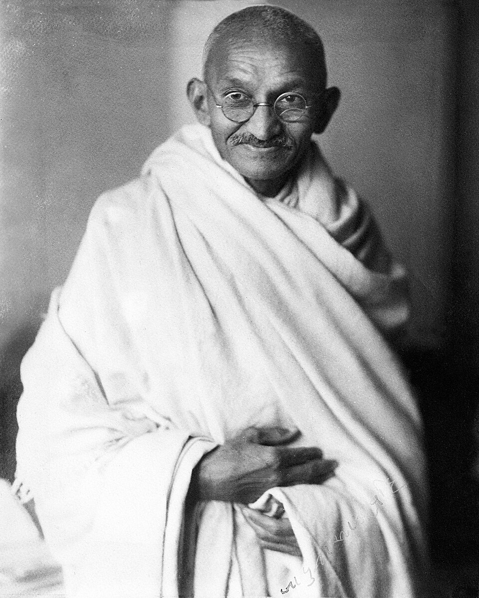
마하트마 간디 · 엘리엇 앤드 프라이(Elliott & Fry) 스튜디오 사진, 1931년 런던 원탁회의 무렵. 손수 짠 카디천을 두른 모습이다. [Wikimedia · Public Domain]
구자라트의 항구도시에서 자랐다는 사실도 그의 정신에 흔적을 남겼다. 포르반다르는 아라비아해를 통해 아프리카·아라비아와 교역하던 상업 도시였고, 다양한 종교와 언어와 사람들이 드나드는 곳이었다. 좁은 마을이 아니라 바다로 열린 도시에서 자란 경험은, 훗날 그가 인도·아프리카·영국을 무대로 활동하며 세계를 한 직물로 보는 시야의 바탕이 되었다. 구자라트 상인 특유의 실용 감각과 협상력, 그리고 자이나교의 비폭력 전통이 짙게 밴 이 지역의 문화는 그의 성격을 빚은 보이지 않는 손이었다.
13세가 되던 1883년, 그는 부모가 정한 대로 같은 13세의 카스투르바이 마칸지(Kasturba)와 결혼했다. 카티아와르의 관습이던 조혼이었다. 훗날 그는 이 어린 결혼을 평생 부끄러워하며, 어린아이에게 짝을 지어주는 풍습을 "야만"이라 부르고 격렬히 비판했다. 첫 아들 하릴랄을 비롯해 네 아들을 두었으나, 자식들과의 관계 특히 장남 하릴랄과의 불화는 그의 생애에서 가장 아픈 상처로 남았다.
나는 평범한 능력의 아이였다. 기억력도 나빴고, 친구들 앞에서 말하는 것을 두려워했다. 내가 무언가를 배웠다면, 그것은 진실을 향한 끈질긴 집착 하나뿐이었다.
간디, 『나의 진리실험 이야기』 제1부
곁가지 1 — 아버지의 임종과 평생의 죄책감
아버지 카람찬드가 누공(瘻孔)을 앓아 병석에 누운 마지막 날들, 열여섯의 모한다스는 매일 밤 아버지의 다리를 주물렀다. 그러나 운명의 그 밤, 그는 잠시 자리를 비워 신혼의 아내 곁으로 갔고, 바로 그 사이에 아버지가 숨을 거두었다. 그는 평생 그 일을 "이중의 부끄러움"이라 불렀다. 육욕에 사로잡혀 임종을 지키지 못했다는 자책은 훗날 그가 37세에 선언한 브라마차리아(brahmacharya, 금욕 서원)의 깊은 동기 중 하나가 되었다.
[Source] M. K. Gandhi, An Autobiography: The Story of My Experiments with Truth, Part I · Ramachandra Guha, Gandhi Before India (Penguin, 2013)
포르반다르의 간디 가문은 본래 식료품 장수를 뜻하는 "간디"라는 성이 말해주듯 평범한 상인 집안이었으나, 모한다스의 할아버지와 아버지 대에 이르러 카티아와르의 여러 작은 토후국에서 재상직을 맡으며 행정가 가문으로 올라섰다. 정치는 곧 가업이었다. 어린 모한다스는 아버지가 영주들의 다툼을 중재하고, 변덕스러운 영국 정치관 앞에서 자존을 지키면서도 충돌을 피하는 모습을 곁에서 지켜보았다. 훗날 그가 보여준, 원칙을 굽히지 않으면서도 상대를 적으로 돌리지 않는 협상의 기질은 이 가풍에서 일찍 싹튼 것이었다.
어머니 푸틀리바이의 신앙은 더 깊은 흔적을 남겼다. 그녀가 다닌 사원은 힌두교와 이슬람교를 한데 아우르는 프라나미 종파의 사원이었고, 그 안에는 『꾸란』의 구절과 힌두 경전이 나란히 놓여 있었다. 여러 종교가 결국 같은 진리의 다른 길이라는 어린 시절의 이 감각은, 훗날 그가 평생 힌두와 무슬림의 화해를 위해 목숨까지 건 신념의 가장 깊은 뿌리가 되었다. 한 사람의 생애를 끝까지 결정한 것은, 거창한 사상이 아니라 어머니를 따라 드나든 한 사원의 풍경이었던 셈이다.
곁가지 2 — 「하리쉬찬드라」 연극과 진실의 씨앗
소년 모한다스는 떠돌이 극단이 올린 「하리쉬찬드라(Harishchandra)」를 보고 깊은 충격을 받았다. 진실을 지키기 위해 왕국과 아내와 아들까지 모두 잃은 전설의 왕 이야기였다. 그는 그 연극을 몇 번이고 되뇌며 "왜 모두가 하리쉬찬드라처럼 진실하지 못할까"를 자문했다고 적었다. 또 한 번은 효심 깊은 「슈라바나(Shravana)」 이야기에 눈물을 흘렸다. 두 전설은 그에게 진실과 효, 자기희생이라는 평생의 좌표를 새겨 넣었다.
[Source] Gandhi, Autobiography Part I, ch.1–2 · Louis Fischer, The Life of Mahatma Gandhi (1950)
곁가지 3 — 친구 셰이크 메흐타브, 한 청년의 시험
소년 시절 간디에게는 셰이크 메흐타브라는 무슬림 친구가 있었다. 대담하고 거침없던 이 친구는 모한다스에게 "영국인이 우리를 지배하는 건 고기를 먹어 강하기 때문"이라며 육식을 권했고, 사창가로 데려가기도 했다. 간디는 호기심과 죄책감 사이에서 흔들렸으나, 결정적 순간마다 어머니에게 한 맹세가 그를 붙들었다. 그는 훗날 이 시절을 부끄럽게 회고하면서도, 유혹에 넘어가지 않은 것이 의지가 아니라 "신의 은총"이었다고 적었다. 가장 평범한 청춘의 방황 속에서, 자기를 지키는 한 가지 원칙의 힘을 그는 일찍 배웠다.
[Source] Gandhi, Autobiography Part I · Guha, Gandhi Before India
유럽
같은 1869년, 지중해와 홍해를 잇는 수에즈 운하가 개통되었다. 인도로 가는 항로가 절반으로 줄었고, 그만큼 영국의 인도 지배는 더 촘촘해졌다. 빅토리아 여왕이 "인도 여제"의 칭호를 받는 것은 7년 뒤인 1876년이다.
미국
남북전쟁이 끝난 지 4년, 율리시스 그랜트가 대통령에 막 취임했다. 대륙횡단철도가 그해 완공되어 동서가 한 가닥 철길로 묶였다.
동아시아
일본은 메이지 유신 2년차로 막 봉건 막부를 무너뜨리고 근대국가로 달려가고 있었다. 조선은 고종 6년, 흥선대원군의 쇄국이 한창이었다. 동방의 세 나라가 각자 다른 방식으로 서구의 충격에 응답하던 시기였다.
II
1888–1891년 · 런던
런던 유학 — 한 채식주의자의 변호사
강의 듣기
"나는 어머니께 세 가지를 맹세했다. 술과 고기와 여자를 멀리하겠다고."
1888년 9월, 열여덟의 모한다스는 변호사가 되기 위해 런던으로 향했다. 결심은 가벼운 것이 아니었다. 카티아와르의 바니아(상인) 카스트는 바다를 건너는 것을 부정(不淨)으로 여겼고, 카스트 장로들은 그를 회의에 불러내 끝내 "카스트에서 추방"한다고 선언했다. 어머니 푸틀리바이도 처음에는 완강히 반대했다. 어머니가 마음을 돌린 것은 한 가지 조건 때문이었다. 자이나교 승려 베차르지 앞에서 모한다스가 무릎을 꿇고 술과 고기와 여자를 멀리하겠다는 세 가지 서약을 한 뒤였다. 이 맹세는 단순한 약속이 아니라 그의 평생을 지탱한 도덕적 척추가 되었다.
런던에 도착한 인도 청년은 처음에는 우스꽝스러울 만큼 영국 신사가 되려 애썼다. 실크 모자를 쓰고 야회복을 맞추고, 프랑스어와 웅변과 사교춤과 바이올린까지 배우려 했다. 그러나 몇 달 만에 그는 그 모든 것이 자신과 맞지 않음을 깨달았다. 진짜 시련은 음식이었다. 채식을 고집하다 굶주리던 그는 어느 날 패링던가의 한 채식 식당과, 그 진열창에 놓인 헨리 솔트(Henry Salt)의 『채식주의를 위한 변론』을 발견한다. 그 책을 읽고서 그는 비로소 채식이 어머니에 대한 약속을 넘어 스스로 선택한 신념임을 알게 되었다.
그는 곧 런던 채식주의 협회(Vegetarian Society)에 가입해 위원으로 활동하며 회보에 글을 썼다. 가난한 인도 유학생이 한 영국 도덕개혁 운동의 동료가 될 수 있다는 경험, 곧 신념을 매개로 사람들이 국적과 인종을 넘어 결합한다는 경험은 훗날 그의 운동 방식의 원형이 되었다. 수줍어 발표 한 번 제대로 못 하던 청년이 위원회의 회의록과 논쟁 속에서 조직과 글쓰기를 익힌 것도 이 시절이었다.
채식주의 운동 참여는 그에게 뜻밖의 정치 훈련이 되었다. 그는 협회 회보에 인도의 식습관과 명절을 소개하는 글을 연재하며 처음으로 대중을 상대로 글을 썼고, 위원회 회의에서 의사 진행과 토론의 규칙을 익혔다. 한때 법정에서 한마디도 못 할 만큼 수줍던 청년이, 신념을 가진 일에서는 펜과 조직으로 자기를 표현하는 법을 배운 것이다. 또한 그는 영국 사회에 분명히 존재하던 도덕적 양심, 곧 동물 학대와 빈곤과 부정의에 분노하는 영국인들의 존재를 직접 목격했다. 영국인이라고 다 같은 압제자가 아니며, 그들 안에도 정의에 호소할 수 있는 양심이 있다는 이 발견이, 훗날 그의 비폭력 전략의 숨은 전제가 되었다.
1891년 6월, 그는 이너 템플(Inner Temple)에서 변호사(barrister) 자격을 얻고 곧 귀국길에 올랐다. 그러나 봄베이 부두에서 그를 기다린 것은 비보였다. 어머니가 이미 세상을 떠난 뒤였고, 충격을 우려한 가족이 그가 돌아올 때까지 죽음을 숨겨온 것이었다. 아버지의 임종도, 어머니의 마지막 얼굴도 보지 못했다는 사실은 그의 생애에 두 번째로 깊은 그늘을 드리웠다.
런던은 나를 변호사로 만들지 못했을지 모른다. 그러나 런던은 나에게 두 권의 책을 주었고, 그 책들이 나를 만들었다.
간디, 『나의 진리실험 이야기』 제1부
런던 시절 · 핵심 수치
출항1888년 9월 4일, 봄베이
나이18세
학교이너 템플(법학원) · 런던 유니버시티 칼리지(라틴어·불어)
자격1891년 6월 10일 변호사 등록, 6월 12일 귀국
맹세술·고기·여자 금기 3서약 — 평생 유지
곁가지 1 — 런던에서 처음 만난 두 권의 책
역설적이게도 인도 청년이 자기 나라의 정신적 뿌리를 처음 진지하게 만난 곳은 런던이었다. 두 신지학자 친구가 그에게 에드윈 아널드가 영역한 『바가바드 기타』(『The Song Celestial』)를 권했다. 그는 평생 이 책을 "정신적 사전"이라 부르며 가장 많이 인용했다. 또 한 권은 후일 만난 톨스토이의 『하느님의 나라는 너희 안에 있다』였다. 한 인도 청년이 자기 경전을 영국에서, 자기 비폭력을 러시아 소설가에게서 되찾은 셈이다.
[Source] Gandhi, Autobiography Part I · Bhikhu Parekh, Gandhi: A Very Short Introduction (Oxford UP)
곁가지 2 — 변호사가 된 첫날, 한마디도 못 한 사내
귀국 후 봄베이 법정에 처음 선 변호사 간디는 의뢰인을 위해 반대신문을 시작하려다 머릿속이 하얘져 한마디도 못 하고 자리에 주저앉았다. 그는 수임료를 돌려주고 법정을 빠져나왔다. "나는 변호사로서는 완전한 실패였다"고 그는 솔직히 적었다. 이 실패가 그를 평범한 변호 업무 대신, 진실과 화해를 중재하는 새로운 형태의 법률가로 떠밀었다. 그는 훗날 "변호사의 진정한 임무는 다투는 두 편을 화해시키는 것"이라 말하게 된다.
[Source] Gandhi, Autobiography Part II · Joseph Lelyveld, Great Soul (2011)
런던의 3년은 단순한 법학 수업 기간이 아니라, 한 시골 청년이 처음으로 세계와 자기 자신을 동시에 발견한 시간이었다. 그는 신지학회 모임에 드나들며 동서양의 종교를 비교하는 토론에 참여했고, 무신론과 기독교, 불교와 이슬람의 책들을 두루 읽었다. 어떤 신앙도 통째로 받아들이지 않았지만, 그 모든 만남이 "진리는 하나이되 길은 여럿"이라는 그의 평생의 믿음을 살찌웠다. 가난한 유학 생활 속에서 그는 직접 빵을 굽고 거리를 걸어 다니며 한 푼이라도 아꼈는데, 이 자발적 검소함의 훈련이 훗날 아쉬람의 청빈한 삶으로 이어졌다.
또 한 가지 주목할 점은, 간디가 영국이라는 제국의 심장부에서 오히려 영국적 제도의 장점 곧 법치, 토론, 청원, 언론의 자유를 몸으로 익혔다는 사실이다. 그는 평생 영국인 개개인을 미워하지 않았고, 영국 헌정의 정신을 존중했다. 다만 그 정신이 식민지 인도에서는 지켜지지 않는다는 모순을 끝까지 파고들었을 뿐이다. 제국의 법으로 제국의 부정을 고발하는 그의 독특한 저항 방식은, 바로 이 런던 시절의 경험에서 길어 올린 것이었다.
영국
간디가 런던에 있던 시절은 빅토리아 시대 절정기였다. 대영제국은 지구 육지의 4분의 1을 지배했고, "해가 지지 않는 제국"이라는 말이 글자 그대로였다. 그가 그 심장부에서 제국의 법을 배운다는 사실은 훗날 그가 같은 법으로 제국을 흔들 무기를 손에 쥔 것이었다.
러시아
톨스토이가 『하느님의 나라는 너희 안에 있다』를 집필하던 무렵이다. 비폭력 무저항(non-resistance) 사상이 야스나야 폴랴나에서 무르익고 있었다.
한국
조선은 갑오개혁(1894) 직전, 동학의 기운이 농민들 사이에 번지고 있었다. 비슷한 시기 인도와 조선 모두에서 농민과 종교가 결합한 저항의 불씨가 자라고 있었다.
Tabula I · 남아프리카의 21년 (1893–1914)
더반에서 트란스발까지 — 사티아그라하가 태어난 땅
영국령 식민지 트란스발(보어) 간디의 이동 추방 사건
1893년 한 밤의 기차 추방에서, 1906년 첫 사티아그라하 선언까지 — 한 변호사가 한 운동가로 깨어난 땅.
III
1893년 6월 7일 · 남아프리카 피터마리츠버그
피터마리츠버그 — 한 밤의 모욕
강의 듣기
"그 추운 밤, 한 변호사가 한 영혼으로 깨어났다."
1893년 4월, 인도에서 변호사로 자리 잡지 못한 스물셋의 모한다스는 더반의 인도 무역회사 다다 압둘라의 1년 계약 변호사로 남아프리카에 발을 디뎠다. 출발은 가벼운 객지살이였다. 그러나 그 1년은 결국 21년이 되었고, 그를 인도가 아니라 아프리카의 한 식민지에서 정치적으로 다시 태어나게 했다. 도착 직후 그는 더반 법정에서 영국인 판사로부터 터번을 벗으라는 요구를 받았다. 모욕을 느낀 그는 차라리 법정을 나와버렸다. 인종차별의 첫 맛이었다.
며칠 뒤인 6월 7일, 그는 사건 처리를 위해 일등칸 표를 들고 프리토리아행 기차에 올랐다. 한밤중 피터마리츠버그(Pietermaritzburg) 역에서 한 백인 승객이 차장을 불렀다. "유색인이 일등칸에 타고 있다." 차장은 그에게 짐칸으로 옮기라 명령했고, 정당한 표를 가진 그가 거부하자 경찰을 불러 그를 짐가방째 플랫폼에 내던졌다. 겨울의 고지대, 외투는 압수된 가방 안에 있었다. 그는 캄캄한 대합실에서 떨며 밤을 새웠다.
그 밤이 그의 진짜 출생일이었다. 그는 두 가지 선택지 사이에서 밤새 고민했다. 모욕을 삼키고 인도로 돌아갈 것인가, 아니면 끝까지 남아 이 부정과 싸울 것인가. 동이 틀 무렵 그는 결심했다. 달아나는 것은 비겁이다. 나는 남아서, 내가 당한 이 모욕의 뿌리인 부정과 싸우겠다. 그는 훗날 이 밤을 "내 생애에서 가장 창조적인 경험"이라 불렀다.
나는 인도로 도망칠 수도 있었다. 그러나 그것은 비겁이었으리라. 나의 의무는 부정과 싸우는 것이었지, 부정에서 도망치는 것이 아니었다. 그 결심이 내 인생의 방향을 바꾸었다.
간디, 『나의 진리실험 이야기』 제2부 / 1893년 회고
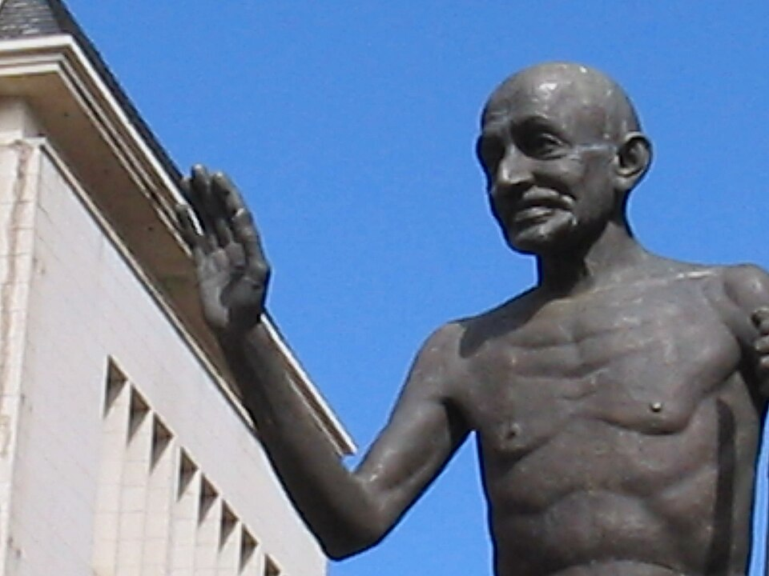
피터마리츠버그의 간디 동상 · 1893년 6월 7일 그가 일등칸에서 쫓겨난 바로 그 역. 사건 100주년인 1993년, 데스먼드 투투 대주교가 동상을 제막했다. [Wikimedia · CC BY-SA]
흥미로운 점은, 간디가 이 사건에서 개인적 복수가 아니라 제도적 변화를 목표로 삼았다는 것이다. 그는 자신을 모욕한 차장이나 백인 승객을 미워하지 않았다. 그가 분노한 것은 인간을 피부색으로 차별하는 그 부정한 제도였다. 적이 아니라 부정을, 사람이 아니라 악행을 겨냥한다는 이 구별이야말로 사티아그라하의 핵심이었고, 그 씨앗이 바로 피터마리츠버그의 추운 대합실에서 움텄다. 한 개인의 모욕을 보편적 정의의 문제로 끌어올리는 능력, 그것이 간디를 단순한 피해자가 아니라 지도자로 만들었다.
이후 1년 계약이 끝나갈 무렵, 나탈 식민지 의회가 인도인의 선거권을 박탈하는 법안을 추진했다. 귀국 송별연 자리에서 그 소식을 들은 간디는 짐을 풀었다. "한 달만 더"가 결국 21년이 되었다. 그는 1894년 나탈 인도인 회의(Natal Indian Congress)를 창설하고, 청원·언론·법정 투쟁을 조직했다. 변호사의 펜이 정치 무기로 바뀌는 순간이었다.
곁가지 1 — "쿨리 변호사"라는 멸칭
당시 남아프리카 백인들은 인도인을 모두 "쿨리(coolie, 막노동꾼)"라 불렀다. 간디조차 신문에서 "쿨리 변호사"로 조롱당했다. 그는 이 멸칭에 분노하기보다, 계약 노동자로 끌려온 가난한 타밀·텔루구 인도인들과 자신을 같은 처지로 묶는 계기로 삼았다. 신분과 카스트를 넘어선 "인도인"이라는 정체성이 아프리카 땅에서 처음 그의 안에 자라났다.
[Source] Ramachandra Guha, Gandhi Before India · Gandhi, Satyagraha in South Africa (1928)
피터마리츠버그의 그 밤을 흔히 "한 모욕이 한 사람을 깨웠다"는 한 문장으로 요약하지만, 실제 그날 밤 간디의 머릿속을 채운 것은 분노가 아니라 차가운 계산이었다고 그는 회고했다. 굴욕을 삼키고 도망치는 것은 비겁이지만, 분노에 휩쓸려 똑같이 폭력으로 갚는 것 또한 답이 아니었다. 그는 제3의 길을 찾고자 했다. 부정을 정면으로 거부하되, 그 거부의 방식 자체가 도덕적으로 흠이 없어서 상대조차 끝내 부끄럽게 만드는 길이었다. 이 한 밤의 사유가 십수 년 뒤 사티아그라하라는 이름으로 결정(結晶)된다.
그가 남아프리카에 머물기로 한 결정은 개인적으로 큰 희생이었다. 인도에 두고 온 가족, 변호사로서의 안정된 미래, 모국에서의 명예 이 모든 것을 그는 한 식민지의 차별과 싸우기 위해 미뤘다. 더구나 그가 지키려 한 것은 자기 한 사람의 권리가 아니라, 계약노동자로 끌려와 글자도 모르는 수만 인도인의 권리였다. 양복 입은 변호사가 자신과 아무 혈연도, 카스트의 인연도 없는 가장 낮은 동포들을 위해 제 삶을 거는 그 선택 속에서, 훗날 인도 전체를 일으킬 지도자의 윤리가 처음 모습을 드러냈다.
곁가지 2 — 발라순다람 사건, 변호사가 민중을 만나다
1894년, 주인에게 매를 맞아 이가 부러진 채 피 흘리며 찾아온 계약노동자 발라순다람을 간디가 변호해 구해낸 일이 더반의 인도인 사회에 퍼졌다. 그날 이후 학대받은 노동자들이 줄지어 그의 사무실 앞에 모였다. 깔끔한 양복의 변호사가 "쿨리"들의 변호인이 되는 그 장면에서, 훗날 인도 민중을 일으킨 지도자의 모습이 처음 어렴풋이 드러났다.
[Source] Gandhi, Satyagraha in South Africa · Guha, Gandhi Before India
남아프리카
당시 남아프리카는 영국령 식민지(케이프·나탈)와 보어인의 공화국(트란스발·오렌지자유국)으로 갈라져 있었고, 1899년 두 세력이 보어전쟁으로 충돌한다. 인종 위계의 맨 아래에는 다수인 아프리카 흑인이 있었고, 인도인은 그 위 어중간한 자리에 놓여 있었다.
인도
본국 인도에서는 인도국민회의가 1885년 창설되어 온건한 청원 정치를 펴고 있었다. 간디가 아프리카에서 단련한 대중 직접행동의 방법은, 훗날 이 점잖은 정당을 통째로 뒤바꿔 놓는다.
IV
1893–1914년 · 남아프리카
남아프리카의 21년 / 사티아그라하의 발견
강의 듣기
"사티아그라하 — 진리의 힘. 나는 평생 이 한 단어를 따라 살았다."
남아프리카의 21년 동안 간디가 발견한 결정적 단어가 사티아그라하(Satyagraha, सत्याग्रह)였다. 진리를 뜻하는 사티아(satya)와 굳게 붙잡음을 뜻하는 아그라하(agraha)를 합한 말로, 본인이 직접 만든 신조어였다. 처음에는 영어 "passive resistance(수동적 저항)"를 빌려 썼으나, 그것이 약자의 무기, 증오를 품은 소극적 저항으로 오해되는 것을 견딜 수 없었다. 그래서 그는 현상금까지 걸어 새 이름을 공모했고, 한 응모작을 다듬어 사티아그라하라 명명했다. 그것은 폭력의 부재가 아니라 진리에 굳게 서서, 스스로 고난을 감수함으로써 적의 양심을 깨우는 적극적 힘이었다.
사티아그라하가 "수동적 저항"과 결정적으로 다른 점은, 그것이 두려움의 부재를 전제한다는 것이었다. 간디는 비겁한 평화보다는 차라리 폭력이 낫다고까지 말했다. 비폭력은 싸울 힘이 없어 어쩔 수 없이 택하는 도피가 아니라, 충분히 보복할 수 있으면서도 그 보복을 스스로 거두는 가장 용기 있는 선택이어야 했다. 그래서 사티아그라히(사티아그라하의 실천자)에게 요구된 것은 온순함이 아니라 죽음 앞에서도 흔들리지 않는 강철 같은 담대함이었다. 그는 약자의 비폭력은 위선이 되기 쉽다고 경고하며, 진정한 비폭력은 가장 강한 자만이 감당할 수 있는 무기라고 거듭 강조했다.
이 사상은 세 줄기 물에서 길어 올려졌다. 힌두교의 아힘사(ahimsa, 불살생)와 『바가바드 기타』의 무사무욕, 자이나교의 비폭력, 그리고 서양의 톨스토이와 소로와 러스킨이었다. 특히 존 러스킨의 『나중에 온 이 사람에게도(Unto This Last)』는 그의 삶을 통째로 뒤집었다. 더반행 기차에서 하룻밤 만에 읽고 그는 이튿날 변호사의 안락한 생활을 버리기로 결심했다. 노동의 존엄, 모든 직업의 평등, 자급자족이라는 책의 가르침을 그는 곧장 공동체 실험으로 옮겼다.
이 시기 간디의 개인적 변모도 극적이었다. 그는 1906년 서른일곱의 나이에 아내와 상의 끝에 평생의 금욕(브라마차리아)을 서원했다. 욕망을 끊는 것이 자기 에너지를 봉사로 온전히 돌리는 길이라 믿었기 때문이다. 그는 또 서구식 의약을 멀리하고 흙·물·단식을 통한 자연요법을 실험했으며, 식사를 점점 단순하게 줄여갔다. 이런 자기 통제의 실험들은 때로 기이하고 가족에게는 가혹했지만, 그에게는 모두 "진리를 향한 실험"의 일부였다. 자기 몸을 먼저 다스리지 못하는 자가 어떻게 한 나라를 이끌겠느냐는 것이 그의 일관된 신념이었다.
그렇게 그는 1904년 더반 근교에 피닉스 정착촌(Phoenix Settlement)을, 1910년 요하네스버그 근교에 톨스토이 농장(Tolstoy Farm)을 세웠다. 변호사·노동자·종교가 함께 땅을 갈고 빵을 굽고 신발을 짓는 자치 공동체였다. 그는 여기서 단순한 삶, 손노동, 청빈, 그리고 1906년에는 평생의 금욕 서원(브라마차리아)을 실천했다. 신문 『인디언 오피니언(Indian Opinion)』을 발행해 운동의 목소리를 퍼뜨린 것도 이때다.
러스킨의 책이 그에게 가르친 핵심은 세 가지였다. 모든 사람의 노동은 동등하게 존엄하다는 것, 변호사의 일과 이발사의 일이 똑같이 가치 있다는 것, 그리고 좋은 삶이란 많이 가지는 것이 아니라 노동하는 단순한 삶이라는 것이었다. 간디는 이 가르침을 책으로만 받아들이지 않고 곧장 자기 삶으로 옮겼다. 이튿날 그는 변호사의 안락을 버리고 농장 공동체를 세웠으며, 자기 손으로 흙을 갈고 빵을 굽기 시작했다. 사상을 즉각 삶으로 번역하는 이 무서운 일관성이야말로, 그를 수많은 사상가와 구별 짓는 결정적 특징이었다. 그는 믿는 것과 사는 것 사이의 간격을 견디지 못하는 사람이었다.
그가 만든 공동체 실험은 단순한 생활 방식의 선택이 아니라 정치 운동의 발전소였다. 피닉스 정착촌과 톨스토이 농장은 사티아그라하 투사들을 길러내는 훈련소이자, 투옥된 활동가 가족들의 피난처였으며, 신문 『인디언 오피니언』을 찍어내는 인쇄소였다. 간디는 운동이란 거리의 시위만이 아니라 일상의 변화에서 시작된다고 믿었다. 스스로 검소하게 살고, 손으로 노동하고, 종교와 카스트의 벽을 허무는 공동체의 일상 자체가 곧 식민 질서에 대한 가장 근본적인 저항이라고 보았다. 이 "건설적 프로그램"의 발상은 훗날 인도 본토에서 카디 운동과 아쉬람 운동으로 꽃핀다.
최초의 대중적 사티아그라하는 1906년 9월 11일, 요하네스버그의 엠파이어 극장에서 터졌다. 트란스발 정부가 모든 인도인 남성에게 지문이 찍힌 등록증을 강제하는 이른바 "흑인법(Black Act)"에 맞서, 약 3,000명이 등록을 거부하고 차라리 감옥을 택했다. 8년에 걸친 투옥과 행진과 광부 파업 끝에, 1914년 간디는 얀 스뮈츠 장군과 협상을 타결했다. 인도식 결혼의 합법화, 인두세 폐지 등 부분적 승리였다. 같은 해, 그는 아프리카를 떠나 인도로 영구 귀국한다.
사티아그라하는 약자의 무기가 아니라 가장 강한 자의 무기다. 그것은 적을 해치지 않고, 스스로 고난을 받아들임으로써 적의 양심을 흔든다.
간디, 『남아프리카에서의 사티아그라하』(1928)
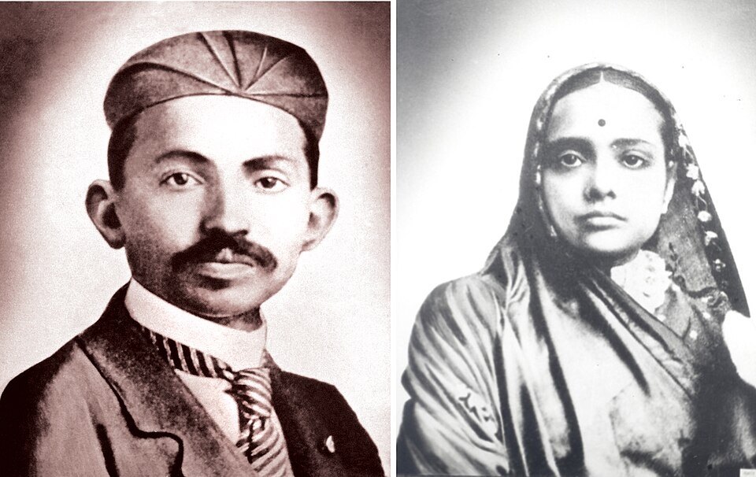
카스투르바와 간디 · 1902년경, 남아프리카 시절. 카스투르바는 톨스토이 농장의 공동노동과 단식 투쟁을 함께했으며, 1913년 광부 행진 때 직접 체포되어 3개월 중노동형을 살았다. [Wikimedia · Public Domain]
남아프리카 사티아그라하 · 핵심 수치
기간1906년 9월 ~ 1914년 7월(약 8년)
최초 선언1906.9.11 요하네스버그 엠파이어 극장
1913 광부 행진약 2,000명, 트란스발 국경 도보 횡단
간디 투옥남아공 시기 총 3회 수감
타결1914 인도인구제법(스뮈츠–간디 협정)
곁가지 1 — 보어전쟁과 줄루 반란, 들것을 든 간디
주목할 모순이 있다. 비폭력의 사도 간디가 1899년 보어전쟁과 1906년 줄루 반란 때 영국 편에서 인도인 위생부대(들것병)를 조직해 자원봉사했다는 사실이다. 그는 제국의 신민으로서 권리를 요구하려면 의무도 다해야 한다고 믿었다. 그러나 줄루 반란 진압에서 채찍에 찢긴 흑인들의 상처를 직접 치료하며 그는 깊이 흔들렸다. 이 체험이 그가 세속적 야망을 버리고 브라마차리아 서원으로 나아간 한 전환점이 되었다.
[Source] Gandhi, Autobiography Part IV · Guha, Gandhi Before India
곁가지 2 — 톨스토이와 주고받은 다섯 통의 편지
1909년 10월, 마흔의 간디가 여든하나의 톨스토이에게 편지를 보냈다. "존경하는 선생님, 저는 트란스발의 보잘것없는 추종자입니다." 일곱 달 동안 다섯 통의 편지가 오갔다. 톨스토이는 마지막 편지에서 비폭력을 "인류에게 주어진 가장 중요한 법칙"이라 불렀고, 그 편지를 쓴 두 달 뒤 세상을 떠났다. 한 인도 변호사의 평생의 스승이 임종 직전의 러시아 노작가였다는 사실은, 비폭력 사상이 국경을 넘어 손에서 손으로 건네진 한 장면이다.
[Source] Gandhi–Tolstoy Correspondence (Gandhi Heritage Portal) · Guha, Gandhi Before India
사티아그라하가 단순한 전술이 아니라 삶의 방식이었음은, 그것을 실천한 공동체의 모습에서 드러난다. 톨스토이 농장에서는 변호사와 목수가, 힌두와 무슬림과 기독교인이, 카스트의 높고 낮음 없이 한솥밥을 먹고 같은 변소를 청소했다. 간디는 특히 변소 청소를 누구도 천하게 여겨서는 안 되는 신성한 노동으로 강조했고, 자신과 가족이 앞장서 그 일을 했다. 인도 사회에서 가장 멸시받던 청소 노동을 지도자가 손수 한다는 것은, 카스트의 위계를 정면으로 거스르는 조용한 혁명이었다. 그가 훗날 불가촉천민을 "하리잔(신의 자녀)"이라 부르며 그들의 권리를 외치게 되는 사상의 씨앗이 이 농장의 일상에 있었다.
또한 남아프리카 시기는 간디가 자신의 무기를 글로 벼린 시기이기도 했다. 그는 1909년 영국에서 인도로 돌아오는 배 위에서 단 열흘 만에 『힌드 스와라지(Hind Swaraj, 인도의 자치)』를 써 내려갔다. 오른손이 지치면 왼손으로 이어 썼다는 이 짧은 책에서 그는 서구 근대문명의 폭력성과 물질주의를 신랄하게 비판하고, 참된 자치란 외세를 쫓아내는 것이 아니라 인도인 스스로 도덕적 주체가 되는 것이라고 주장했다. 영국식 철도·병원·법정·의회를 모두 회의했던 이 급진적 문명비판서는, 그의 정치사상의 출발점이자 가장 논쟁적인 텍스트로 남았다.
아프리카 흑인 문제 — 비판적 시선
남아공 시절 청년 간디의 인종관에는 오늘날 강한 비판을 받는 한계가 있었다. 그는 인도인이 흑인(이른바 "카피르")과 같은 부류로 취급받는 것에 항의하며, 인도인은 흑인보다 문명에서 우위에 있다는 식의 발언을 남겼다. 학자들은 이 시기 그의 인종 인식이 미숙했음을 인정하면서도, 만년에는 모든 인종 차별에 반대하는 보편적 입장으로 성숙했다고 평가한다(A설: 초기 인종주의 한계 / B설: 점진적 성숙).
러시아
톨스토이가 비폭력 무저항을 설파하던 시기, 차르 체제의 러시아는 1905년 혁명의 격동을 겪고 있었다. 폭력 혁명과 비폭력 저항이라는 20세기의 두 길이 같은 시기에 갈라지고 있었다.
Tabula II · 인도 귀국과 소금행진 (1915–1934)
참파란에서 단디까지 — 한 줌의 소금이 제국을 흔들다
영국령 인도 소금행진 소금법 위반
아마다바드 사바르마티 아쉬람에서 단디 해변까지 24일, 387킬로미터의 걸음 — 한 노인이 한 줌의 소금으로 제국의 법을 깼다.
V
1915–1922년 · 인도
인도 귀국 / 첫 비협력 운동
강의 듣기
"한 식민지의 인민이 협력을 거두는 순간, 그 식민 정부는 단 하루도 서지 못한다."
1915년 1월, 마흔다섯의 간디가 인도로 영구 귀국했다. 남아프리카에서 이미 "마하트마"라는 이름이 그를 앞질러 와 있었다. 정치적 스승 고팔 크리슈나 고칼레(Gopal Krishna Gokhale)는 그에게 한 가지 조건을 걸었다. 적어도 1년간은 어떤 정치적 발언도 하지 말고, 인도 전역을 발로 돌며 자기 나라를 다시 배우라는 것이었다. 간디는 그 말을 따라 삼등칸 기차로 인도의 가난과 굶주림과 카스트의 현실을 직접 보았다. 그리고 양복을 벗고, 손으로 짠 거친 면천 카디(khadi)의 도티 한 장으로 갈아입었다. 그것은 가장 가난한 농민과 자신을 같은 자리에 세우는 선언이었다.
귀국 직후 그가 처음 한 일은 정치 연설이 아니라 침묵의 관찰이었다. 그는 인도가 도시의 영어 신문이 아니라 70만 개의 마을에 있다고 믿었고, 그 마을들의 가난과 굶주림을 두 눈으로 보지 않고는 어떤 처방도 내릴 수 없다고 보았다. 삼등칸의 비좁고 더러운 객차에서 그는 가장 낮은 인도인들과 부대끼며, 자신이 런던과 남아프리카에서 익힌 세련된 사상을 인도의 흙냄새 나는 현실로 번역해야 함을 깨달았다. 위대한 지도자가 되기 전에 먼저 자기 나라의 가장 낮은 곳을 배우려 한 이 1년의 침묵이, 그를 다른 엘리트 정치인들과 결정적으로 갈라놓았다.
그의 첫 본격적 인도 투쟁은 1917년 비하르의 참파란(Champaran)이었다. 영국인 농장주들이 소작농에게 강제로 인디고(쪽) 재배를 시켜 착취하던 곳이었다. 간디는 직접 현장에 들어가 수천 명 농민의 증언을 기록하고, 추방 명령에 불복종으로 맞섰다. 결국 조사위원회가 꾸려지고 소작 조건이 개선되었다. 인도 본토 최초의 사티아그라하 승리였다. 이어 1918년 아마다바드 방직노동자 파업과 케다 지역 농민의 납세 거부 투쟁을 잇따라 이끌며, 그는 변방의 성자가 아니라 전국적 지도자로 떠올랐다.
그러나 전환점은 비극이었다. 1919년 영국은 재판 없이 무기한 구금을 허용하는 롤럿법(Rowlatt Act)을 통과시켰다. 간디가 전국적 하르탈(파업·철시)을 호소한 직후인 4월 13일, 펀자브 암리차르의 잘리안왈라 박(Jallianwala Bagh)이라는 막다른 정원에서 평화 집회 중이던 군중에게 레지널드 다이어 준장이 발포를 명령했다. 출구가 막힌 광장에서 약 10분간 1,650발이 쏟아졌다. 공식 집계로 379명, 인도 측 추산으로는 1,000명 이상이 죽었다. 이날 인도인의 영국에 대한 신뢰는 영원히 끝났다.
아마다바드 방직노동자 파업(1918)에서 간디는 처음으로 단식을 정치 무기로 사용했다. 노동자들이 약속한 파업을 포기하려 하자, 그는 "정의가 이루어질 때까지 나는 먹지 않겠다"며 단식에 들어갔다. 이 단식은 사용자들을 압박해 노동자의 임금 인상을 끌어냈으나, 동시에 단식이 가진 양면성 곧 도덕적 호소이자 강력한 압박이라는 성격을 처음 드러냈다. 케다 농민운동에서는 흉작에도 세금을 강요하는 정부에 맞서 납세 거부를 조직해 부분적 승리를 얻었다. 참파란·아마다바드·케다 이 세 차례의 연속된 승리를 통해, 남아프리카에서 돌아온 변호사는 마침내 인도 전체가 우러르는 지도자로 떠올랐다.
비협력 운동의 발상은 단순하면서도 혁명적이었다. 식민 통치는 결국 피지배자의 협력 위에서만 성립한다는 통찰이었다. 인도인이 영국의 학교에서 배우고, 영국의 법정에 호소하고, 영국의 관직에 봉사하고, 영국의 상품을 사는 한, 제국은 인도인의 손으로 떠받쳐지는 셈이었다. 그 협력을 거두는 순간 거대한 통치 기계는 멈춘다. 폭력으로 제국을 무너뜨리려 하지 않고, 제국이 의지하는 협력 자체를 거두어 스스로 주저앉게 만드는 이 발상은, 약자가 강자에게 휘두를 수 있는 가장 독창적인 무기였다.
1920년, 간디는 인도국민회의를 사실상 장악하고 비협력 운동(Non-cooperation Movement)을 선언했다. 영국 학교·법정·관직·작위·상품을 모두 거부하라는 것이었다. 시인 타고르는 영국이 준 기사 작위를 반납했고, 수백만 명이 영국 옷감을 불태우고 물레를 돌렸다. 그러나 1922년 2월, 우타르프라데시의 차우리 차우라(Chauri Chaura)에서 흥분한 군중이 경찰서에 불을 질러 경관 22명이 타 죽는 사건이 일어났다. 간디는 운동이 정점에 있을 때 단호히 중단을 선언했다. 비폭력의 원칙이 깨졌다는 이유였다. 동지들조차 경악한 결정이었다.
비폭력을 깨뜨린 운동은 더 이상 진리의 힘이 아니다. 나는 차라리 운동을 멈추고 다시 시작하겠다. 군중의 폭력은 외세의 총칼보다 더 우리의 대의를 망친다.
간디, 차우리 차우라 사건 후 성명 (1922.2)
그해 3월 그는 선동 혐의로 체포되어 6년형을 선고받았다. 재판에서 그는 변론 대신 자신의 죄를 스스로 인정하며 최고형을 청했다. 옥에서 그는 훗날 『나의 진리실험 이야기』가 될 자서전을 쓰기 시작했다. 1924년 건강 악화로 조기 석방되었다.
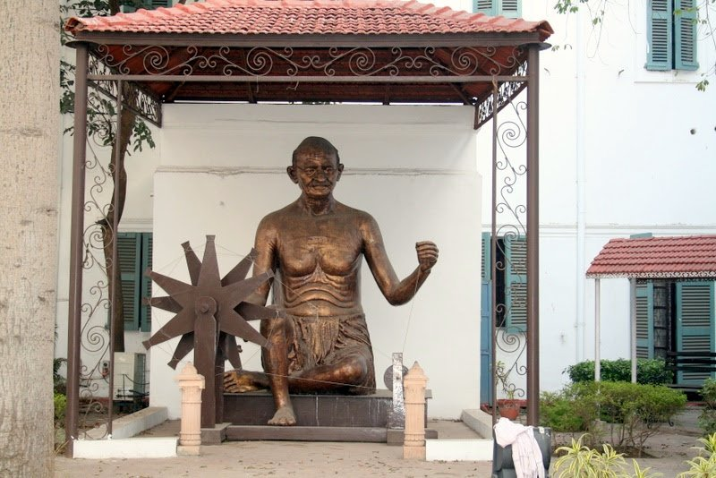
차르카(물레)를 돌리는 간디 · 손으로 짠 카디는 자급자족과 영국 직물 거부의 상징이자, 매일의 노동을 신성시한 그의 철학의 핵심이었다. 그는 매일 일정량의 실을 잣는 것을 수행으로 삼았다. [Wikimedia · Public Domain]
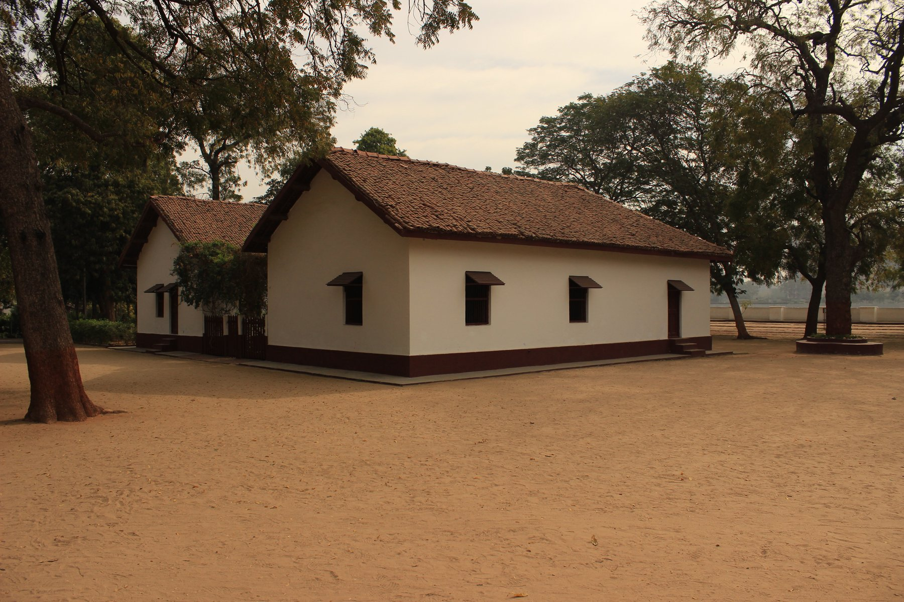
사바르마티 아쉬람 · 아마다바드, 사바르마티 강변. 1917년 세워져 소금행진의 출발점이 된 간디 운동의 본거지. [Wikimedia · CC]
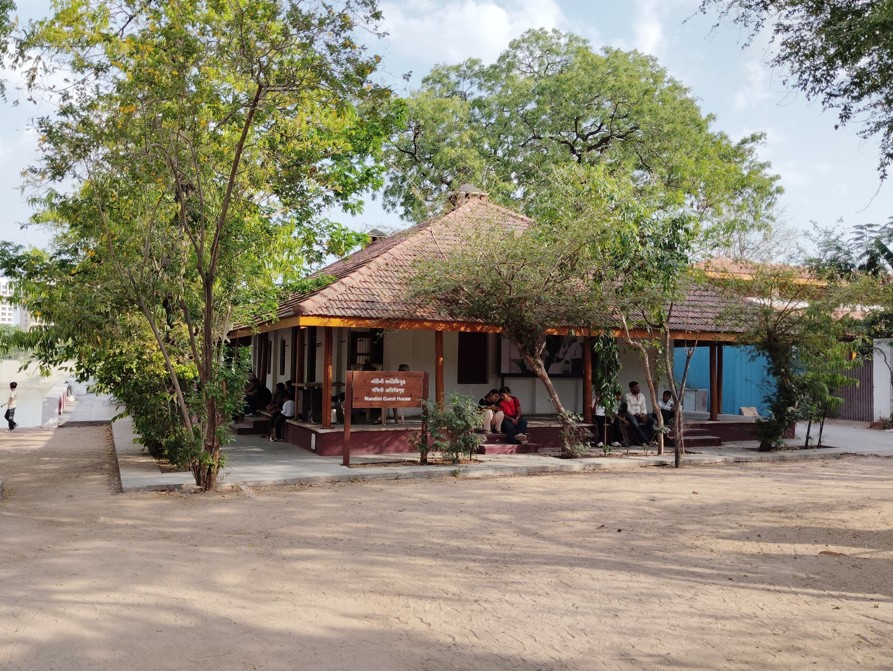
히르다이 쿤지(Hriday Kunj) · 사바르마티 아쉬람 안 간디 부부의 소박한 거처. 물레와 낮은 책상, 몇 안 되는 살림이 전부였다. [Wikimedia · CC]
곁가지 1 — 타고르와 간디, "마하트마"라는 이름
"마하트마(위대한 영혼)"라는 칭호는 시인 라빈드라나트 타고르가 붙였다는 것이 널리 알려진 설이다(이설도 있다). 그러나 두 거인은 자주 부딪쳤다. 타고르는 간디의 물레 예찬과 영국 옷감 화형식을 "맹목적 거부"라 비판했고, 간디는 타고르의 보편주의가 굶주린 농민에겐 사치라 응수했다. 한 사람은 시인, 한 사람은 행동가였다. 그러나 둘은 끝까지 서로를 "구루데브"와 "마하트마"로 존중하며 평생 논쟁의 벗으로 남았다.
[Source] Sabyasachi Bhattacharya(ed.), The Mahatma and the Poet · Guha, Gandhi: The Years That Changed the World
곁가지 2 — 잘리안왈라 박, 우물 속의 시신들
발포가 시작되자 사람들은 사방이 막힌 담장을 기어오르려다 총에 맞았고, 일부는 총탄을 피해 정원 한가운데의 우물로 뛰어들었다. 사건 뒤 그 우물에서만 120구의 시신이 건져졌다고 전한다. 다이어 준장은 청문회에서 후회가 없으며 "더 큰 효과를 위해" 발포했다고 진술했다. 영국 의회 일부는 그를 영웅으로 떠받들며 모금까지 했다. 이 뻔뻔함이 오히려 인도 독립 의지에 기름을 부었다.
간디가 인도 정치에서 이룬 가장 근본적인 변화는, 독립운동을 소수 영어 교육 엘리트의 청원 정치에서 수억 농민과 노동자의 대중운동으로 바꾼 것이었다. 그 이전의 국민회의는 변호사·교수·기자 들이 영국에 정중히 자치를 청원하는 점잖은 모임에 가까웠다. 간디는 이를 통째로 뒤집었다. 그는 농민의 언어로 말하고, 농민의 옷을 입고, 농민의 음식을 먹었다. 물레와 카디는 그 상징이었다. 누구나 매일 실을 자음으로써 독립운동에 참여할 수 있다는 발상은, 정치를 학식 있는 자의 전유물에서 모든 사람의 일상으로 끌어내렸다.
차우리 차우라 사건 후 운동을 중단한 결정은 오늘날까지 논쟁거리다. 동지들은 운동이 정점에 있을 때 그것을 멈춘 것을 두고 "한 번의 일탈 때문에 수백만의 열기를 식혔다"고 비판했다. 그러나 간디에게 비폭력은 목적을 위한 수단이 아니라 그 자체가 목적이었다. 폭력으로 얻은 독립은 결국 또 다른 폭력의 나라를 낳을 뿐이라는 그의 신념은, 훗날 분단의 유혈 속에서 비극적으로 입증되는 동시에 시험받는다. 수단의 순결을 목적보다 앞세운 이 고집이야말로 간디를 다른 모든 혁명가와 구별 짓는 가장 깊은 특징이었다.
유럽
1919년은 제1차 세계대전의 베르사유 조약이 체결된 해다. 윌슨의 "민족자결주의"가 외쳐졌으나, 그 원칙은 아시아·아프리카의 식민지에는 적용되지 않았다. 이 위선이 인도·이집트·조선의 민족운동을 자극했다.
한국
같은 1919년 3월, 조선에서 3·1 운동이 폭발했다. 비폭력 만세시위라는 점에서 간디의 사티아그라하와 정신을 공유했다. 같은 해 인도에서는 4월 잘리안왈라 학살이 일어났다. 제국주의에 맞선 비폭력 저항이 동시에 두 대륙에서 분출하던 해였다.
VI
1930년 3월 12일 – 4월 6일 · 사바르마티 → 단디
소금 행진 — 단디까지의 387킬로미터
강의 듣기
"예순의 노인이 한 줌의 소금으로 한 제국을 흔들었다."
소금은 가장 가난한 자도 매일 먹어야 하는 것이었다. 그래서 영국령 인도 정부는 소금 생산을 독점하고 무거운 세금을 매겼다. 바닷가에 살아도 인도인은 제 손으로 소금을 만들 수 없었고, 반드시 정부 소금을 사야 했다. 간디는 바로 이 점을 꿰뚫었다. 추상적인 자치(스와라지)가 아니라, 모든 인도인의 부엌과 직결된 소금을 표적으로 삼은 것이다. 1930년 1월 국민회의가 완전 독립(푸르나 스와라지)을 선언한 직후, 그는 이 소금세를 정면으로 깨기로 한다.
1930년 3월 12일 새벽, 예순의 간디가 사바르마티 아쉬람을 나섰다. 78명의 아쉬람 동지가 함께였다. 목적지는 387킬로미터 떨어진 구자라트 해안의 작은 마을 단디(Dandi). 하루 약 16킬로미터씩, 마을마다 멈춰 연설하고 자고 다시 걸었다. 길가 마을의 촌장들이 잇따라 영국이 임명한 직책을 사임했고, 행렬은 눈덩이처럼 불어났다. 24일째인 4월 6일 단디에 닿았을 때, 그를 따르는 군중은 수만 명에 이르렀고 세계의 신문기자들이 그 뒤를 따랐다.
4월 6일 아침, 간디는 바닷가로 걸어 들어가 진흙과 소금이 엉긴 한 줌의 천연 소금을 집어 들었다. "이로써 나는 제국의 기초를 흔든다." 이 단순한 행위가 신호탄이 되었다. 인도 전역의 해안에서 사람들이 제 손으로 소금을 끓이고 팔았고, 불법 소금이 거리에서 거래되었다. 5월에는 사로지니 나이두가 이끈 다라사나 제염소 습격에서, 비무장 시위대가 영국 경찰의 곤봉에 줄줄이 머리가 깨지면서도 한 명도 손을 들어 막지 않았다. 미국 기자 웹 밀러가 타전한 이 장면은 전 세계에 사티아그라하의 도덕적 충격을 각인시켰다.
나는 이 한 줌의 소금으로 대영제국의 기초를 흔들고자 한다. 우리는 정의를 위해 고난을 받을 것이며, 결코 상대를 해치지 않을 것이다.
간디, 단디 해변 연설 (1930.4.6)
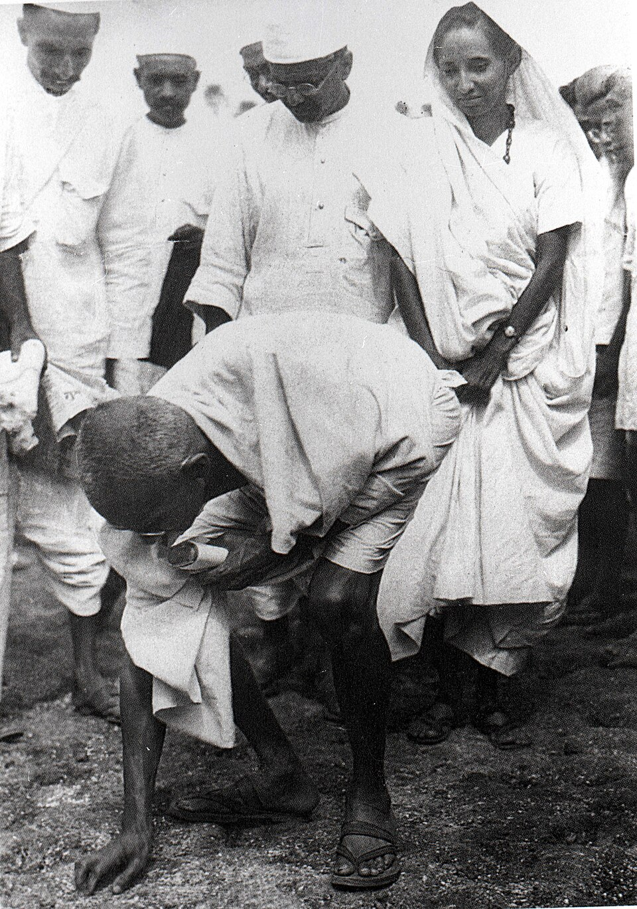
단디 소금 행진(Salt March) · 1930년 4월, 단디 해안. 예순의 간디가 손에 든 한 줌의 소금은 20세기 정치사에서 가장 유명한 이미지가 되었다. 그해 『타임』은 그를 "올해의 인물"로 선정했다. [Wikimedia · Public Domain]
소금 행진은 사티아그라하의 모든 요소를 한자리에 담은 완벽한 사례였다. 표적은 누구나 이해하는 부정의(소금세)였고, 수단은 철저히 비폭력적이었으며, 행위 자체는 상징적이고 극적이어서 세계의 시선을 끌었다. 무엇보다 그것은 약자가 강자에게 던지는 도덕적 도전이었다. 비무장의 노인이 제국의 법을 어기고도 폭력으로 맞서지 않음으로써, 폭력을 휘두르는 쪽을 오히려 부끄럽게 만들었다. 영국은 그를 가둘 수는 있었으나, 그가 불러일으킨 도덕적 각성까지 가둘 수는 없었다.
약 6만 명이 소금법 위반으로 투옥되었고, 간디 자신도 5월 5일 체포되었다. 그러나 운동의 도덕적 승리는 분명했다. 그해 말 미국 『타임』은 깡마른 도티 차림의 노인을 표지에 싣고 "올해의 인물"로 선정했다. 1931년 어윈 총독과의 협정(간디–어윈 협정)으로 정치범이 풀려나고 간디는 런던 원탁회의에 초청받았다. 그는 노벨 평화상 후보에 1937·1938·1939·1947·1948년 다섯 차례 올랐으나 끝내 받지 못했다. 1948년 그가 암살된 해, 위원회는 "적합한 생존 후보 없음"을 이유로 상을 수여하지 않았다. 훗날 노벨 위원회는 "간디를 빠뜨린 것이 우리의 가장 큰 누락"이라 공식 인정했다.
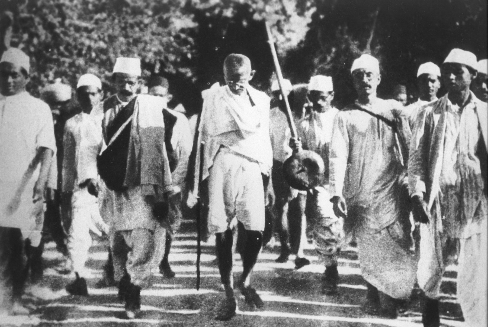
소금 행진 행렬 · 1930년 3~4월, 사바르마티 출발 직후. 지팡이를 짚은 간디를 동지들이 줄지어 따른다. [Wikimedia · Public Domain]
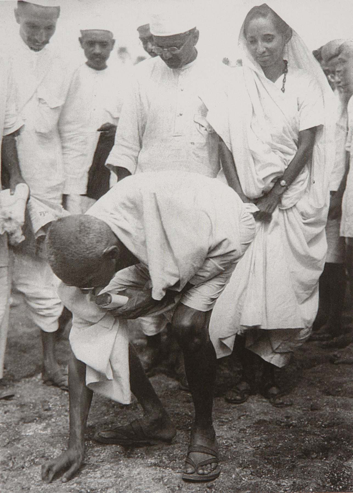
단디 해변 도착 · 1930년 4월 5일, 소금법 위반 직전의 간디. [Wikimedia · Public Domain]
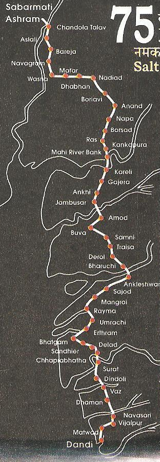
사바르마티에서 단디까지 387km · 24일에 걸친 행진의 경로. [Wikimedia · CC]
소금 행진 · 핵심 수치
출발1930.3.12 사바르마티 아쉬람
도착1930.4.6 단디 해변(24일)
거리약 387km, 하루 약 16km
출발 인원간디 외 78명 → 도착 시 수만 명
투옥전국 약 6만 명 소금법 위반 수감
간디 나이60세
곁가지 1 — 다라사나, 머리가 깨지면서도 손을 들지 않은 사람들
1930년 5월 21일 다라사나 제염소. 사로지니 나이두가 이끈 약 2,500명의 비무장 시위대가 네 줄로 줄을 서서 한 걸음씩 다가갔고, 영국 경찰은 쇠를 박은 곤봉으로 그들의 머리를 내리쳤다. 시위대는 신음하며 쓰러질 뿐 단 한 명도 팔을 들어 막거나 반격하지 않았다. 미국 기자 웹 밀러는 "이렇게 소름 끼치는 장면은 처음 본다"고 타전했고, 이 기사는 1,350개 신문에 실렸다. 사티아그라하의 도덕적 힘이 세계 여론을 움직인 순간이었다.
[Source] Webb Miller, I Found No Peace (1936) · Guha, Gandhi: The Years That Changed the World
곁가지 3 — 사로지니 나이두, "미친 노인을 모시는 일이 이렇게 비싸다니"
소금 행진에 동행한 시인이자 독립운동가 사로지니 나이두는 간디를 깊이 존경하면서도 특유의 유머로 그를 놀리곤 했다. 검소함을 고집하는 간디를 위해 염소젖과 특별식, 안전한 거처를 마련하느라 드는 비용을 두고 그녀는 "이 미친 노인을 가난하게 모시는 데 이렇게 큰돈이 든다니!"라고 농담했다. 간디도 이 농담을 즐겼다. 성자의 청빈조차 실은 주변 사람들의 헌신으로 떠받쳐졌다는 이 솔직한 일화는, 신화 뒤의 인간 간디를 엿보게 한다. 나이두는 훗날 독립 인도 최초의 여성 주지사가 된다.
[Source] Sarojini Naidu 회고 · Guha, Gandhi: The Years That Changed the World
소금 행진의 천재성은 표적의 선택에 있었다. 토지세나 헌법 같은 추상적 쟁점이 아니라, 갓난아기부터 노인까지 누구나 매일 먹는 소금을 골랐다는 점이다. 부자든 빈자든, 힌두든 무슬림이든, 글을 알든 모르든 모두가 소금의 부당함을 곧바로 이해할 수 있었다. 그래서 이 운동은 종교와 카스트와 계급의 경계를 넘어 전 인도를 하나로 묶었다. 영국은 처음에 이 "유치한" 표적을 비웃었으나, 곧 그 단순함이야말로 가장 위협적인 무기임을 깨달았다. 위대한 정치는 종종 가장 작고 일상적인 것에서 시작된다는 것을, 간디는 한 줌의 소금으로 증명했다.
행진 자체가 거대한 연극이자 언론 캠페인이었다. 간디는 매일 같은 시각에 출발하고 같은 시각에 멈춰 기도하며, 마을마다 멈춰 연설하는 의식적 리듬을 만들었다. 전 세계 기자들이 24일 동안 그 행렬을 따라가며 매일 기사를 타전했고, 영국 제국의 도덕적 정당성은 날마다 한 조각씩 깎여나갔다. 무력이 전혀 동원되지 않은 이 행진이 군대보다 더 깊이 제국을 흔들 수 있었던 것은, 간디가 폭력의 시대에 "도덕적 드라마"라는 전혀 새로운 정치 언어를 발명했기 때문이다.
곁가지 2 — "단식의 정치성"이라는 비판
간디의 단식은 도덕적 무기였지만, 동시에 비판의 표적이기도 했다. 그는 생애에 17차례 이상 정치적 단식을 했다. 어떤 학자들은 이를 "도덕적 강요(moral coercion)"라 부른다. 자신의 목숨을 인질 삼아 상대의 양심을 압박하는 방식은, 비폭력을 표방하지만 사실은 강력한 강제력이라는 것이다. 특히 1932년 암베드카르를 향한 단식은 이 비판의 핵심 사례가 된다(제11장 참조). 간디 본인은 단식이 "자기 정화이지 협박이 아니다"라고 항변했다.
[Source] Bhikhu Parekh, Gandhi's Political Philosophy · George Orwell, "Reflections on Gandhi"(1949)
미국
1930년은 대공황의 한복판이었다. 자본주의 세계가 흔들리던 그때, 간디의 자급자족(스와데시)과 단순한 삶의 철학은 서구 지식인들에게도 대안적 문명론으로 읽혔다.
중국
장제스의 국민정부와 마오쩌둥의 공산당이 충돌하던 시기다. 중국은 무장혁명의 길을 택했고, 인도는 비폭력 저항의 길을 택했다. 20세기 아시아의 두 거대한 실험이 갈라지고 있었다.
VII
1931년 9월 · 런던
런던 원탁회의 / 처칠의 적대
강의 듣기
"인도가, 빈민의 차림으로, 영국 왕을 만나러 갔다."
1931년 9월, 간디는 다시 런던으로 향했다. 이번에는 인도국민회의의 유일한 대표로, 제2차 원탁회의(Round Table Conference)에 참석하기 위해서였다. 손수 짠 카디 숄 한 장, 회중시계, 염소젖, 물레가 그가 가져간 전부였다. 그는 런던의 화려한 호텔 대신 이스트엔드의 빈민가 키슬리 홀에 묵으며 노동자·아이들과 어울렸다. 영국 보수 언론은 격분했다. "반나체의 탁발승이 제국의 협상 테이블에 앉다니."
회의 자체는 실패였다. 영국은 인도의 종교·카스트별 분리선거를 부추겨 민족운동을 분열시키려 했고, 간디는 인도를 종교로 쪼개는 어떤 안도 받아들일 수 없었다. 그는 빈손으로 돌아왔다. 그러나 그가 영국 민중과 맺은 인간적 교감은 또 다른 승리였다. 그는 자신의 카디 운동으로 일자리를 잃은 랭커셔의 방직 노동자들을 일부러 찾아갔다. 그들이 그를 환대하자, 한 노동자가 말했다. "나는 실업자입니다. 하지만 당신이 옳다면, 내가 굶더라도 옳습니다."
버킹엄 궁의 다과회에서 조지 5세를 알현할 때도 간디는 카디 도티 차림 그대로였다. 뒷날 한 기자가 "왕 앞에서 그 복장이 적절했다고 보느냐"고 묻자, 그는 미소 지으며 답했다. "폐하께서 우리 두 사람 몫의 옷을 충분히 입고 계셨으니까요."
The King had on enough for both of us. — 폐하께서 우리 두 사람 몫의 옷을 충분히 입고 계셨다.
간디, 조지 5세 알현 복장에 대한 기자 질문에 (1931, 런던)
그의 옷차림은 단순한 검소함이 아니라 정교하게 계산된 정치 언어였다. 가장 가난한 인도 농민과 똑같은 차림으로 제국의 심장에 서는 것 자체가, 그가 대표하는 인도가 누구인지를 웅변했다. 화려한 예복도, 훈장도, 권위의 상징도 없이 오직 손으로 짠 천 한 장만으로 왕과 마주한 그 모습은, 권위란 외양이 아니라 진실에서 나온다는 그의 평생의 신념을 한 장면으로 압축했다. 영국 언론은 그를 조롱했으나, 바로 그 조롱 속에서 그는 누구보다 강렬한 이미지를 세계에 남겼다.
이 무렵 보수당의 한 정치인이 간디를 향해 평생의 적의를 드러냈다. 윈스턴 처칠이었다. 그는 의회와 연설에서 간디를 이렇게 조롱했다. "한때 이너 템플의 변호사였고 지금은 동방의 흔한 탁발승 행세를 하는 이 선동가가, 반나체로 부왕의 궁전 계단을 성큼성큼 올라 (…) 황제를 대표하는 자와 대등하게 협상하는 광경은 역겹고 모욕적이다." 이 한마디는 영국 신문을 거쳐 인도 전역에 퍼졌고, 오히려 인도인의 분노에 기름을 부었다.
두 사람의 대립은 단순한 정치적 견해차가 아니라 세계관 자체의 충돌이었다. 처칠에게 제국은 문명의 질서이자 영국의 영광이었고, 인도인은 그 질서 아래 보호받아야 할 미성숙한 신민이었다. 간디에게 제국은 한 민족이 다른 민족의 존엄을 빼앗는 부정의 그 자체였다. 한 사람은 권력과 위계를 믿었고, 다른 한 사람은 양심과 평등을 믿었다. 20세기는 결국 처칠이 지키려던 제국의 질서가 무너지고, 간디가 외친 자결과 평등의 원칙이 승리하는 방향으로 흘러갔다. 역사는 천천히, 그러나 분명하게 반나체의 탁발승 편에 섰다.
처칠의 적대는 평생 이어졌다. 1942년 전시 총리가 된 그는 "나는 대영제국의 청산을 주재하기 위해 총리가 된 것이 아니다"라며 인도 독립을 끝까지 막으려 했다. 두 거인의 평생에 걸친 대립은, 제국의 오만과 비폭력의 양심이 정면으로 맞부딪친 20세기의 한 상징이 되었다.
곁가지 1 — 랭커셔 방직공의 환대
간디의 영국 옷감 거부 운동은 영국 랭커셔의 방직업을 직접 타격했고, 수많은 노동자가 실직했다. 그가 굳이 그 한복판 다웬을 찾아갔을 때, 사람들은 그를 비난할 것이라 모두가 예상했다. 그러나 노동자들은 오히려 그를 둘러싸고 환호했고, 함께 사진을 찍었다. 자신을 가난하게 만든 사람을 적이 아니라 한 인간으로 맞이한 이 장면을, 간디는 평생 가장 감동적인 기억으로 꼽았다.
[Source] Geoffrey Ashe, Gandhi: A Study in Revolution · British Pathé 영상 기록(1931)
곁가지 2 — 아인슈타인이 보낸 헌사
같은 시기, 알베르트 아인슈타인은 간디에게 깊이 매료되어 있었다. 그는 훗날 간디의 70세 생일에 부친 글에서 이렇게 적었다. "다가올 세대는, 이런 사람이 실제로 이 땅 위를 피와 살을 가지고 걸어 다녔다는 사실을 좀처럼 믿지 못할 것이다." 한 시대의 가장 위대한 과학자가, 한 시대의 가장 위대한 도덕가에게 바친 헌사였다.
[Source] Albert Einstein, message on Gandhi's 70th birthday(1939) · Einstein Archives
곁가지 3 — 찰리 채플린과의 만남
1931년 런던 체류 중, 간디는 당대 최고의 희극 배우 찰리 채플린의 면담 요청을 받았다. 처음에 간디는 채플린이 누구인지 몰라 만남을 망설였다고 한다. 이스트엔드의 한 노동자 집에서 이루어진 두 사람의 대화에서, 채플린은 간디의 기계 문명 반대론에 대해 물었다. 간디는 "기계 자체가 아니라, 인간을 노예로 만드는 기계의 사용 방식에 반대한다"고 답했다. 이 대화는 채플린이 훗날 산업 문명을 풍자한 영화 「모던 타임스」(1936)에 영감을 주었다고 전해진다. 한 시대의 광대와 한 시대의 성자가 나눈 뜻밖의 대화였다.
[Source] Charlie Chaplin, My Autobiography (1964) · Guha, Gandhi: The Years That Changed the World
원탁회의가 정치적으로 실패한 데에는 영국의 "분할 통치" 전략이 깔려 있었다. 영국은 인도를 힌두·무슬림·시크·달리트 등 종교와 카스트별로 잘게 쪼개어 각자 별도의 대표를 내세우게 함으로써, 인도를 하나의 민족으로 묶으려는 국민회의의 시도를 무력화하려 했다. 간디가 "나는 인도 전체를 대표하지, 한 종파를 대표하지 않는다"고 외친 것은 바로 이 함정에 맞선 것이었다. 그러나 이 입장은 곧 그가 모든 소수자를 진정으로 대표할 수 있는가라는 날카로운 반문 특히 달리트의 권리를 둘러싼 암베드카르와의 충돌을 불러온다.
그럼에도 1931년의 영국 방문은 간디라는 인물을 서구 대중에게 각인시킨 결정적 계기였다. 카디 도티 한 장에 숄을 걸친 채 빈민가 아이들과 어울리고, 자신을 실직케 한 방직공들에게 환대받고, 왕 앞에서도 옷차림을 바꾸지 않은 이 작은 인도인의 모습은 서구 언론에 끝없이 회자되었다. 권력과 부의 상징을 모두 벗어던진 한 사람이 가진 도덕적 권위가, 제국의 온갖 화려한 의전보다 더 강할 수 있음을 그는 몸 하나로 증명했다. 처칠이 그토록 그를 미워한 것도, 어쩌면 그 권위 앞에서 제국의 위세가 초라해 보였기 때문이었다.
영국
1931년 영국은 대공황 속에 거국내각이 구성되고 금본위제를 포기한 격동의 해였다. 그 와중에도 제국은 인도라는 "왕관의 보석"을 놓을 생각이 전혀 없었다.
일본
같은 1931년 9월, 일본이 만주사변을 일으켜 만주를 침략했다. 아시아의 한쪽에서는 군국주의의 팽창이, 다른 쪽에서는 비폭력 독립운동이 동시에 진행되고 있었다.
VIII
1942년 8월 8일 · 봄베이 그왈리아 탱크 광장
"인도를 떠나라" / 마지막 옥살이
강의 듣기
"하라, 아니면 죽으라(Do or Die)."
제2차 세계대전이 한창이던 1942년, 영국은 인도의 전쟁 협조를 얻기 위해 크립스 사절단을 보냈다. 그러나 그 제안은 전쟁이 끝난 뒤의 자치라는 막연한 약속일 뿐, 즉각적 독립이 아니었다. 더구나 각 주가 인도 연방에서 이탈할 권리까지 담아 분단의 씨앗을 품고 있었다. 간디는 이를 "파산해가는 은행이 끊어준 선일자 수표"라 일축했다. 더 기다릴 수 없다고 판단한 그는, 영국에 즉각적이고 무조건적인 철수를 요구하기로 한다.
1942년 8월 8일, 봄베이의 그왈리아 탱크 광장에서 간디는 인도철퇴 운동(Quit India Movement)을 선언했다. 그날 그가 남긴 구호가 "Do or Die — 하라, 아니면 죽으라"였다. 자유를 쟁취하거나 그 시도 속에 죽으라는 뜻이되, 어디까지나 비폭력을 지키라는 명령이었다. 그러나 영국의 대응은 신속하고 가혹했다. 바로 다음 날 새벽, 간디와 네루를 비롯한 국민회의 지도부 전원이 일제히 체포되었다.
지도부가 사라지자 운동은 통제를 벗어나 일부 지역에서 철도·전신선 파괴와 폭동으로 번졌다. 영국은 군대를 동원해 무자비하게 진압했고, 수만 명이 투옥되었으며 천 명 이상이 사망했다. 간디는 이 폭력을 막지 못한 것을 괴로워했으나, 그 책임의 상당 부분이 지도부를 가둔 영국에 있다고 보았다.
"하라, 아니면 죽으라"는 구호는 종종 오해되지만, 그 안에는 비폭력의 가장 엄격한 요구가 담겨 있었다. 그것은 적을 죽이라는 말이 아니라, 자유를 위해 스스로 죽을 각오를 하되 결코 남을 죽이지는 말라는 명령이었다. 간디는 이번 운동이 마지막 결전이 되기를 바랐고, 그래서 참가자들에게 어느 때보다 높은 도덕적 규율을 요구했다. 그러나 지도부가 일제히 투옥되면서 그 규율을 가르칠 사람이 사라졌고, 운동은 통제를 벗어났다. 비폭력 대중운동이 지도자의 부재 속에서 얼마나 취약해지는가를, 인도철퇴 운동은 역설적으로 증명했다.
일흔셋의 간디는 푸나의 아가 칸 궁(Aga Khan Palace)에 21개월간 갇혔다. 이 마지막 옥살이는 그의 생애에서 가장 슬픈 시기였다. 평생의 비서이자 그림자였던 마하데브 데사이가 수감 6일 만에 그의 곁에서 심장마비로 숨졌다. 그리고 1944년 2월 22일, 62년을 함께한 아내 카스투르바가 같은 옥에서 간디의 무릎을 베고 세상을 떠났다.
나는 이제야 한 사람과 60년을 함께 산다는 것이 무엇인지 안다. 카스투르바와 나는 두 몸이었으나 한 영혼이었다. 그녀를 잃고서야 나는 그녀가 내 일부였음을 깨달았다.
간디, 카스투르바의 임종 후 기록 (1944.2)
카스투르바와 간디 · 62년의 결혼. 그녀는 평생 간디의 운동을 함께했고, 때로 그의 고집에 맞서 자기 뜻을 굽히지 않았다. 그녀의 죽음은 간디에게 가장 깊은 사적 상실이었다. [Wikimedia · Public Domain]
간디에게 감옥은 단순한 처벌의 공간이 아니었다. 그는 투옥을 "여왕의 호텔에 든다"고 농담하며, 옥살이를 독서와 명상과 집필의 시간으로 바꾸었다. 그는 감옥에서 『기타』를 번역하고, 편지를 쓰고, 물레를 돌렸다. 사티아그라하에서 자발적 투옥은 핵심 전술이었다. 부당한 법을 어기고 그 처벌을 기꺼이 받아들임으로써, 법의 부당함을 만천하에 드러내는 것이다. 감옥을 두려워하지 않는 사람들 앞에서 식민 권력의 가장 강력한 무기인 처벌은 무력해졌다. 수십만 인도인이 그를 따라 감옥을 두려워하지 않게 되었을 때, 제국의 통치는 이미 안에서부터 흔들리고 있었다.
카스투르바의 죽음은 한 시대의 끝을 알리는 종소리 같았다. 열세 살에 맺어진 두 사람의 결혼은 처음에는 어린 남편의 고집과 질투로 얼룩졌으나, 60여 년을 함께하며 두 사람은 서로를 깊이 이해하는 동지가 되었다. 카스투르바는 글을 거의 몰랐으나, 남아프리카에서 직접 사티아그라하에 나서 투옥되었고, 남편의 무리한 요구에 맞서 자기 뜻을 굽히지 않은 강인한 여인이었다. 간디는 그녀를 통해 "고집을 꺾는 법"을 배웠다고 고백했다. 그녀의 죽음 앞에서 그는 비로소 자신이 평생 그녀에게 얼마나 의지해왔는지를 깨달았다. 위대한 성자의 곁에는, 역사가 거의 기록하지 않은 한 평범하고도 비범한 여인이 있었다.
1944년 5월, 간디는 건강 악화로 석방되었다. 이것이 그의 마지막 옥살이였다. 그는 남아프리카 시절부터 평생 합쳐 약 6년 반을 감옥에서 보냈다. 출옥했을 때 세계는 이미 전쟁의 끝을 향하고 있었고, 인도의 독립은 눈앞에 다가와 있었다. 그러나 그 독립은 그가 평생 두려워한 모습 곧 한 나라가 둘로 갈라지는 형태로 오고 있었다.
인도철퇴 운동과 마지막 수감
선언1942.8.8 봄베이 그왈리아 탱크 광장
구호"Quit India" / "Do or Die"
체포1942.8.9 새벽, 지도부 일제 검거
수감지푸나 아가 칸 궁(21개월)
마하데브 데사이수감 6일 만 사망(1942.8.15)
카스투르바옥중 사망(1944.2.22)
평생 총 수감약 6년 반
곁가지 1 — 보스의 다른 길, 인도국민군
간디가 비폭력으로 영국에 맞서던 바로 그때, 또 한 명의 인도 지도자 수바스 찬드라 보스는 정반대 길을 택했다. 그는 "적의 적은 친구"라며 일본·독일의 지원을 받아 인도국민군(INA)을 조직하고 무력으로 영국과 싸웠다. "나에게 피를 달라, 그러면 자유를 주겠다"는 그의 구호는 간디의 비폭력과 날카롭게 대비됐다. 두 사람은 방법을 두고 결별했으나, 인도 독립이라는 목표는 같았다. 오늘날 인도에서 두 사람 모두 국부로 추앙된다.
[Source] Sugata Bose, His Majesty's Opponent (Harvard UP) · Guha, Gandhi: The Years That Changed the World
곁가지 2 — 벵골 대기근, 침묵당한 죽음
인도철퇴 운동을 진압하던 1943년, 벵골에서 약 300만 명이 굶어 죽는 대기근이 닥쳤다. 전시 물자 징발과 미얀마 함락으로 쌀 공급이 끊긴 데다, 처칠 정부가 구호 식량 수송을 거부하면서 참사가 커졌다. 처칠은 "인도인들이 토끼처럼 번식한다"는 식의 발언을 남겼다고 기록된다. 옥에 갇힌 간디는 이 죽음 앞에서 아무것도 할 수 없었고, 이는 그의 마지막 옥살이를 더욱 비통하게 만들었다.
[Source] Madhusree Mukerjee, Churchill's Secret War (2010) · Amartya Sen, Poverty and Famines (1981)
인도철퇴 운동은 간디의 마지막 대규모 전국 운동이었다. 그 직접적 성과는 즉각적 독립이 아니었지만, 영국으로 하여금 인도를 더는 무력으로만 붙들 수 없다는 사실을 분명히 인식시켰다. 2차 대전이 끝난 1945년, 전쟁으로 피폐해진 영국에는 더 이상 거대한 인도를 강제로 통치할 힘도 의지도 남아 있지 않았다. 인도철퇴 운동이 뿌린 광범위한 저항의 기억, 그리고 보스의 인도국민군 재판이 불러일으킨 분노가 합쳐져, 영국의 철수는 시간문제가 되었다. 비폭력과 무력이라는 두 흐름이 결과적으로 같은 방향으로 제국을 떠밀었다.
한편 이 시기 간디 개인에게는 비협력 운동 때와는 다른 고독이 깃들었다. 한때 그의 한마디면 인도 전체가 움직였으나, 이제 젊은 세대는 더 즉각적이고 더 급진적인 길을 원했고, 무슬림연맹은 별도의 국가를 향해 멀어지고 있었다. 평생의 비서와 아내를 같은 옥에서 잃은 노인은, 자신이 평생 쌓아 올린 통합의 비전이 손가락 사이로 빠져나가는 것을 지켜봐야 했다. 그의 가장 위대한 투쟁은 끝나가고 있었지만, 그의 가장 외롭고 가장 숭고한 싸움 동족의 증오에 맞선 싸움은 아직 시작도 하지 않은 상태였다.
세계
1942년은 스탈린그라드 전투와 미드웨이 해전이 벌어진 2차 대전의 분수령이었다. 제국들이 총력전을 벌이는 한복판에서 간디는 "전쟁의 방법으로는 자유를 얻을 수 없다"는 신념을 굽히지 않았다.
동남아시아
일본이 싱가포르와 미얀마를 함락하며 영국령 아시아가 무너지고 있었다. 보스가 일본과 손잡은 것도 이 흐름 속에서였다. 제국의 약화가 인도 독립을 앞당긴 역설이었다.
Tabula III · 독립과 분단의 비극 (1942–1948)
델리·캘커타·노아칼리 — 한 노인이 학살을 막으러 걸었다
인도 파키스탄 간디의 평화 순례 종교 학살
독립의 날, 간디는 델리의 축제장이 아니라 캘커타와 노아칼리의 학살 현장을 맨발로 걸으며 단식했다. 그의 마지막 전쟁은 제국이 아니라 동족의 증오였다.
IX
1947년 8월 15일 / 캘커타
분리 독립의 비극 / 캘커타의 단식
강의 듣기
"내 평생의 일이, 한 나라가 둘로 찢기는 자리에서 끝났다."
1947년 8월 15일 자정, 인도가 마침내 독립했다. 네루가 "운명과의 약속(tryst with destiny)"을 선언하며 새 국가의 새벽을 알렸다. 그러나 같은 자정에 그 나라는 둘로 찢겼다. 힌두 다수의 인도(Bharat)와 무슬림 다수의 파키스탄(Pakistan)으로의 분리(Partition)였다. 영국 변호사 시릴 래드클리프가 인도를 한 번도 와본 적 없이 5주 만에 그은 경계선을 따라, 펀자브와 벵골이 살갗째 찢어졌다.
독립을 향한 마지막 협상은 1946년부터 숨 가쁘게 진행되었다. 영국 내각사절단은 인도를 하나의 느슨한 연방으로 유지하는 안을 제시했으나, 힌두와 무슬림의 불신은 이미 돌이킬 수 없었다. 진나의 무슬림연맹은 1946년 8월 "직접행동의 날"을 선포했고, 캘커타에서만 나흘간 약 4천 명이 종교 폭동으로 죽었다. 피가 피를 부르는 악순환 속에서 마지막 총독 마운트배튼은 권력 이양을 1948년 6월에서 1947년 8월로 앞당겼다. 빠른 철수가 유혈을 줄이리라는 계산이었으나, 결과는 정반대였다. 졸속의 분단이 오히려 대학살을 불렀다.
그 결과는 인류사 최대의 단기 인구 이동이자 학살 중 하나였다. 약 1,500만 명이 국경을 넘어 양방향으로 피난했고, 그 과정에서 추정 100만~200만 명이 종교 폭동·열차 학살·기아로 목숨을 잃었다. 무슬림은 인도에서, 힌두·시크는 파키스탄에서 쫓겨났다. 시신이 가득 실린 "유령 열차"가 양쪽 국경을 오갔다. 펀자브에서는 이웃이 이웃을, 어제의 친구가 오늘의 적을 칼로 베었다. 한 세기를 함께 살아온 공동체가 단 몇 주 만에 서로를 학살하는 광경 앞에서, 간디가 평생 믿어온 인간에 대한 신뢰는 가장 혹독한 시험대에 올랐다.
간디는 평생 분단을 반대했다. "내 몸을 둘로 가르기 전에는 인도를 가르지 못한다"고 그는 절규했다. 그러나 그는 흐름을 막을 수 없었다. 가장 가까운 동지 네루와 파텔조차 유혈을 끝내려면 분단이 불가피하다고 보았고, 무슬림연맹의 진나는 별도 국가를 끝까지 요구했으며, 떠나려 서두르던 영국은 분단을 받아들였다. 노년의 간디는 정치의 변방으로 밀려나 있었다.
그에게 분단은 단순한 영토의 분할이 아니라 한 문명이 종교라는 이름으로 스스로를 둘로 찢은 도덕적 자해였다. 그가 평생 믿어온 것은 힌두와 무슬림이 한 어머니의 두 눈과 같다는 것이었다. 어린 시절 어머니를 따라 드나든, 『꾸란』과 힌두 경전이 나란히 놓인 사원의 풍경이 그 믿음의 뿌리였다. 그런데 바로 그 두 종교가 서로의 피를 부르는 광경을, 그는 자신의 생애 마지막에 보아야 했다. 그의 가장 깊은 신념이 가장 처참하게 부서지는 순간이었다. 그러나 그는 절망 속에 주저앉는 대신, 일흔여덟의 몸으로 가장 위험한 학살의 현장으로 걸어 들어갔다. 정치적 영향력은 잃었으나, 도덕적 권위는 그 폐허 위에서 오히려 가장 순수하게 빛났다.
독립의 날, 간디는 델리의 축하 행사에 없었다. 그는 종교 폭동이 가장 극심하던 캘커타의 한 무슬림 집에 머물며, 힌두와 무슬림이 서로를 죽이는 것을 멈추기 전까지 먹지 않겠다고 단식에 들어갔다. 단 한 사람의 단식이 도시를 멈춰 세웠다. 양 진영의 무장 청년들이 무기를 그의 발 앞에 내려놓았고, 나흘 만에 캘커타의 학살이 잦아들었다. 마운트배튼 총독의 한 참모는 이렇게 기록했다.
펀자브에서는 5만 5천 명의 군대가 대규모 폭동을 막지 못했다. 그러나 벵골에서는 단 한 사람의 군대, 곧 간디가 평화를 지켰다.
마운트배튼 총독부 보고서, 캘커타 단식에 관하여 (1947.9)
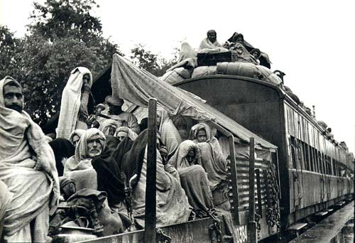
분단의 피난 열차 · 1947년 펀자브. 지붕까지 사람으로 뒤덮인 열차가 국경을 향했고, 어떤 열차는 시신만 가득 실린 채 도착했다. 약 100만~200만 명이 분단 학살로 죽었다. [Wikimedia · Public Domain]
캘커타의 단식은 비폭력이 가진 힘의 정점을 보여주었다. 단 한 사람이, 어떤 무기도 군대도 없이, 오직 자기 몸을 굶기는 것만으로 한 도시의 살육을 멈춰 세웠다. 그것은 협박이 아니라 호소였다. 간디는 누구를 죽이겠다고 위협한 것이 아니라, 자기가 죽겠다고 했을 뿐이다. 그 호소가 통한 것은, 그가 평생 쌓아 올린 도덕적 신뢰가 양 진영 모두에게 인정받았기 때문이다. 무기로 강요할 수 없는 것을, 한 사람의 진실한 희생이 이루어낸 것이다.
독립의 날 그가 보여준 태도는 그의 인격을 압축한다. 온 나라가 자유를 축하하던 그날, 정작 그 자유를 위해 누구보다 오래 싸운 사람은 축제에 없었다. 그는 캘커타의 가난한 무슬림 동네에서 단식과 기도로 하루를 보내며 "오늘은 기뻐할 날이 아니다"라고 말했다. 그에게 진정한 독립은 한 깃발이 내려가고 다른 깃발이 올라가는 것이 아니라, 사람이 사람을 종교로 죽이지 않는 사회였다. 그 독립은 아직 오지 않았다고 그는 보았다. 가장 빛나는 승리의 순간에 가장 어두운 패배를 직시한 이 정직함이, 그를 단순한 정치 지도자가 아니라 한 시대의 양심으로 만들었다.
그 직전 그는 무슬림이 학살당한 동벵골 노아칼리(Noakhali)의 마을들을 맨발로 걸어 다니며 화해를 호소했다. 일흔일곱의 노인이 진흙길을 걸어 한 마을씩 들어가, 가해자와 피해자를 한자리에 앉혔다. 1948년 1월, 그는 델리에서 다시 단식했다. 이번에는 인도 정부가 분단 협정대로 파키스탄에 줄 5억 5천만 루피를 지급하도록 압박하기 위해서였다. 단식 끝에 정부는 송금을 결정했다. 그러나 바로 이 "무슬림 편향"이, 한 광신자가 그를 죽이기로 결심한 직접적 명분이 되었다.
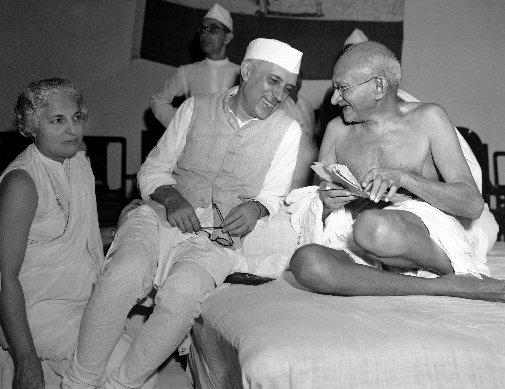
간디와 네루 · 전인도국민회의, 봄베이, 1946년 7월. 간디가 후계자로 점찍은 네루는 독립 인도의 초대 총리가 된다. 그러나 분단 문제에서 두 사람의 길은 갈렸다. [Wikimedia · Public Domain]
1947 분단 · 핵심 수치
독립1947.8.15 자정
분리인도(Bharat) · 파키스탄(서·동)
국경선래드클리프 라인(5주 만에 획정)
피난민약 1,500만 명
사망추정 100만~200만 명
캘커타 단식1947.9.1~9.4, 학살 진정
곁가지 1 — 래드클리프 라인, 와보지도 않고 그은 국경
국경을 그은 시릴 래드클리프는 인도에 와본 적도, 인도 지리를 잘 알지도 못한 영국 변호사였다. 그는 단 5주 만에 낡은 지도와 인구 통계만으로 펀자브와 벵골을 갈랐다. 어떤 마을은 집 한복판으로 국경이 지나갔다. 임무를 마친 래드클리프는 보수마저 거절하고 영국으로 돌아가 두 번 다시 인도 이야기를 입에 올리지 않았다. 시인 오든은 "그의 손길에 닿은 곳마다 죽음이 따라왔다"고 썼다.
[Source] W. H. Auden, "Partition"(1966) · Yasmin Khan, The Great Partition (Yale UP, 2007)
곁가지 2 — 노아칼리를 걸은 맨발의 순례
1946년 말부터 넉 달간, 간디는 동벵골 노아칼리의 학살 마을 47곳을 맨발로 걸었다. 가시밭과 진흙탕 길이었고, 더러는 그의 길에 오물을 뿌려두기도 했다. 그는 매일 같은 기도문을 부르며 한 마을씩 들어가, "당신의 이웃을 다시 형제로 받아들이라"고 호소했다. 정치 무대에서 밀려난 노인의 이 외로운 순례를, 훗날 많은 이들은 그의 생애에서 가장 위대한 장면으로 꼽는다.
[Source] Nirmal Kumar Bose, My Days with Gandhi · Guha, Gandhi: The Years That Changed the World
분단은 간디 생애 최대의 패배였다. 평생 힌두와 무슬림을 한 형제로 묶으려 한 그의 꿈은, 독립이라는 가장 빛나는 순간에 가장 처참한 모습으로 부서졌다. 그는 자유의 날을 축제가 아니라 단식과 기도로 보냈고, "오늘은 기뻐할 날이 아니다"라고 말했다. 그가 보기에 분단은 단순한 영토의 분할이 아니라, 한 문명이 종교라는 이름으로 스스로를 둘로 찢은 도덕적 자해였다. 그러나 그는 절망에 주저앉는 대신, 일흔여덟의 몸으로 가장 위험한 학살의 현장으로 걸어 들어갔다. 정치적 영향력은 잃었으나, 도덕적 권위는 그 폐허 위에서 오히려 가장 순수하게 빛났다.
역사가들은 간디가 분단을 막지 못한 것을 그의 한계로 지적한다. 무슬림 대중의 두려움, 진나의 정치적 야심, 영국의 조급함이 맞물린 거대한 흐름 앞에서, 한 사람의 도덕적 호소는 너무 약했다는 것이다. 그러나 동시에 많은 이들은, 분단의 광풍 한복판에서 그가 캘커타와 노아칼리에서 보여준 단신의 평화 행동이야말로 그의 생애 가장 위대한 장면이었다고 평가한다. 거대한 비극을 막지는 못했으되, 그 비극 속에서 한 인간이 보여줄 수 있는 도덕적 용기의 극한을 그는 몸으로 증언했다. 실패한 정치가이자 성공한 성자라는 이 역설이, 만년의 간디를 가장 정확하게 설명한다.
중동
같은 시기 영국은 또 다른 식민지 팔레스타인에서도 철수를 준비하며 분할안을 내놓고 있었다. 1948년 이스라엘 건국과 인도-파키스탄 분단은, 제국이 떠나며 종교·민족 경계로 땅을 가른 20세기의 쌍둥이 비극이었다.
한국
1945년 해방된 한반도도 38선으로 갈라져 1948년 두 정부가 들어섰다. 제국의 퇴장이 분단으로 귀결된 또 하나의 사례였다. 인도·팔레스타인·한국, 세 곳에서 거의 동시에 분단선이 그어지고 있었다.
X
1948년 1월 30일 · 뉴델리 비를라 하우스
비를라 하우스의 세 발의 총탄
강의 듣기
"헤이 라마 — 오, 라마(हे राम)."
1948년 1월 30일 금요일 오후 5시 17분. 일흔여덟의 간디가 뉴델리 비를라 하우스(Birla House)의 정원에서 열리는 저녁 기도회로 향했다. 단식으로 쇠약해진 그는 두 손녀 마누와 아바의 어깨에 의지해 걸었다. 정원의 잔디밭을 가로지를 때, 군중 속에서 한 사내가 앞으로 나와 합장하듯 두 손을 모았다. 간디가 인사를 받으려는 순간, 사내는 외투 속에서 베레타 권총을 꺼내 지척에서 세 발을 쏘았다. 한 발은 배에, 두 발은 가슴에 박혔다.
간디는 "헤이 라마(हे राम)"라는 말을 남기고 쓰러졌다고 전한다(이 마지막 말의 진위에는 이설도 있다). 그는 비를라 하우스 안으로 옮겨졌으나 곧 숨을 거두었다. 인도 독립 5개월 보름 만이었다. 그날 밤 라디오에서 네루는 떨리는 목소리로 국민에게 알렸다. "우리의 삶에서 빛이 사라졌습니다(The light has gone out of our lives)."
그의 죽음에는 짙은 예감이 깔려 있었다. 분단 이후 그는 무슬림에게 너무 우호적이라는 이유로 힌두 극단주의자들의 표적이 되어 있었고, 열흘 전에는 폭탄 테러까지 겪은 뒤였다. 주변에서는 경호 강화를 거듭 권했으나 그는 한사코 거부했다. "신이 나를 지킨다. 누가 나를 쏜다면, 나는 미소를 지으며 가슴으로 그 총알을 받고도 입에서 라마의 이름을 잃지 않을 것이다." 그는 죽음을 두려워하기는커녕, 오히려 증오의 한복판에서 어떻게 죽을 것인가를 자기 마지막 메시지로 삼으려 한 듯했다. 그리고 그 바람은 글자 그대로 이루어졌다.
암살자는 나투람 고드세(Nathuram Godse), 서른아홉의 힌두 민족주의자였다. 마라티 브라만 출신으로 힌두 극우 조직 RSS·힌두 마하사바와 연결돼 있었다. 그는 현장에서 도망치지 않고 체포되었다. 재판에서 그는 90분에 걸쳐 자신의 동기를 변론했다. 핵심은 하나였다. "간디는 무슬림에게 거듭 양보해 인도를 약하게 만들었다. 분단도, 파키스탄에 대한 송금도 그의 책임이다." 1949년 11월 15일, 고드세는 처형되었다.
우리의 삶에서 빛이 사라졌습니다. 사방이 어둠뿐입니다. (…) 그러나 내가 틀렸습니다. 그 빛은 결코 꺼지지 않을 것입니다. 천 년이 지나도 이 땅에서 빛날 것입니다.
자와할랄 네루, 전국 라디오 추도 연설 (1948.1.30)
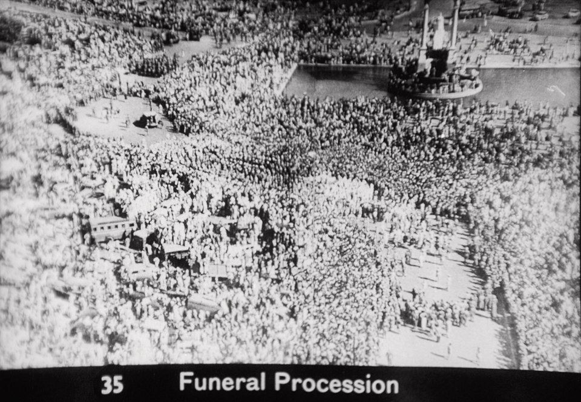
간디의 장례 · 1948년 1월 31일, 뉴델리 라즈가트(Raj Ghat). 약 100만~200만 명이 운구 행렬과 화장식에 모여, 인류사에 손꼽히는 규모의 장례가 되었다. [Wikimedia · Public Domain]
그의 죽음 앞에서 인도는 한순간 멈춰 섰다. 거리마다 사람들이 통곡했고, 종교가 다른 이들이 함께 울었다. 평생 힌두와 무슬림을 형제로 묶으려던 그의 꿈은, 역설적이게도 그의 죽음의 순간에 잠시나마 이루어졌다. 같은 힌두의 손에 죽었다는 충격이 힌두 극단주의의 광기를 부끄럽게 만들었고, 들끓던 종교 폭동은 거짓말처럼 가라앉았다. 살아서 멈추지 못한 학살을 그는 죽음으로써 멈춘 셈이었다. 비폭력의 사도가 폭력으로 쓰러졌으나, 바로 그 죽음이 마지막으로 한 번 더 폭력을 잠재운 것이다.
그의 죽음 앞에서 인도는 한순간 멈춰 섰다. 거리마다 사람들이 통곡했고, 종교가 다른 이들이 함께 울었다. 평생 힌두와 무슬림을 형제로 묶으려던 그의 꿈은 역설적이게도 그의 죽음의 순간에 잠시나마 이루어졌다. 같은 힌두의 손에 죽었다는 충격이 힌두 극단주의의 광기를 부끄럽게 만들었고, 들끓던 종교 폭동은 거짓말처럼 가라앉았다. 살아서 멈추지 못한 학살을 그는 죽음으로써 멈춘 셈이었다. 네루 정부는 RSS를 일시 불법화했고, 온 나라가 자신들이 무엇을 잃었는지를 비로소 깨달았다.
이튿날, 야무나 강변 라즈가트에서 그의 시신이 힌두식으로 화장되었다. 군중은 끝이 보이지 않았다. 그의 유해는 갠지스를 비롯한 인도 각지의 강과 세계 여러 곳에 나뉘어 뿌려졌다. 한 줌의 소금으로 제국을 흔든 사람이, 한 줌의 재가 되어 세계의 물로 돌아간 것이다. 그가 남긴 재산이라고는 안경 하나, 회중시계 하나, 샌들 한 켤레, 밥그릇 하나, 그리고 손수 짠 천 몇 자락이 전부였다. 지구의 4분의 1을 다스리던 제국을 무릎 꿇린 사람이 남긴 유품이 그토록 단출했다는 사실 자체가, 그가 평생 가르친 모든 것을 마지막으로 한 번 더 증언했다.
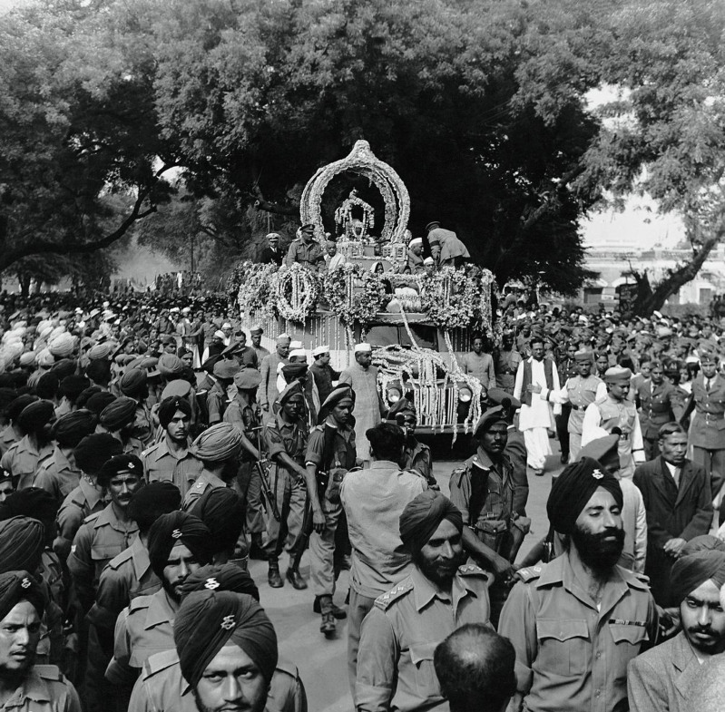
장례 행렬 · 1948년 1월 31일. 운구 차량을 따라 수십만 군중이 델리 거리를 메웠다. [Wikimedia · Public Domain]
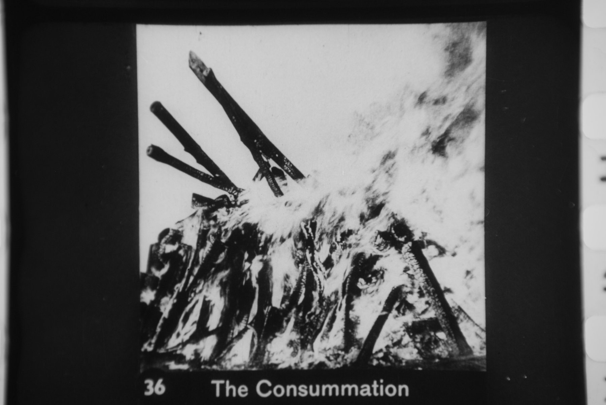
화장식 · 라즈가트, 야무나 강변, 1948년 1월 31일. 오늘날 이 자리는 인도의 국가적 추모지가 되었다. [Wikimedia · Public Domain]
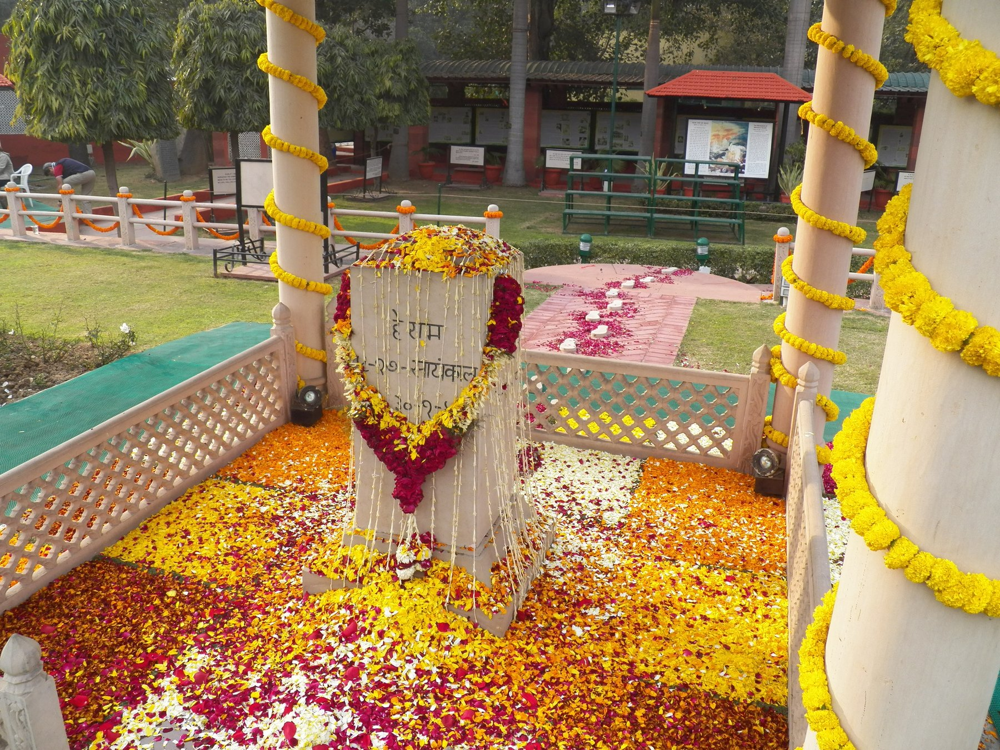
암살 장소 추모비 · 뉴델리 비를라 하우스(현 간디 스므리티), 2013년. 그가 쓰러진 자리에 그의 마지막 발걸음이 새겨져 있다. [Wikimedia · CC]
곁가지 1 — 열흘 전의 첫 번째 시도
1948년 1월 30일의 총격은 사실 두 번째 시도였다. 열흘 전인 1월 20일, 같은 고드세 일당이 비를라 하우스 기도회에서 사제폭탄을 터뜨렸으나 실패했다. 한 가담자(마단랄 파와)가 현장에서 붙잡혔다. 경찰은 음모의 윤곽을 알았으나 경비는 허술했다. 간디 자신은 경호 강화를 거부하며 말했다. "신이 나의 방패다. 누군가 나를 쏜다면, 나는 미소 지으며 가슴으로 그 총알을 받을 것이다." 열흘 뒤 그 말은 그대로 이루어졌다.
간디의 죽음에는 깊은 역설이 있다. 평생 비폭력을 설파한 사람이 폭력으로 생을 마쳤고, 힌두와 무슬림의 화해에 목숨을 건 사람이 같은 힌두의 손에 죽었다. 그를 죽인 것은 외세의 제국이 아니라 자기 동족의 광신이었다. 이는 그의 가장 깊은 적이 결국 인간 내면의 증오 그 자체였음을 비극적으로 드러낸다. 그가 일생을 바쳐 싸운 대상은 영국이라는 정치 권력이 아니라, 사람이 사람을 종교와 인종의 이름으로 미워하게 만드는 그 마음의 구조였던 것이다. 그리고 바로 그 증오가 그를 쓰러뜨렸다.
그러나 그의 죽음은 동시에 인도를 한순간 멈춰 세웠다. 암살 직후 인도 전역에서 들끓던 종교 폭동이 거짓말처럼 잦아들었다. 그를 죽인 자가 힌두였다는 충격이, 힌두 극단주의의 광기를 잠시나마 부끄럽게 만든 것이다. 네루 정부는 RSS를 일시 불법화했고, 온 나라가 자신들이 무엇을 잃었는지를 깨달았다. 간디는 살아서 멈추지 못한 학살을, 죽음으로써 멈춘 셈이었다. 한 줌의 소금으로 시작해 자신의 피로 끝낸 그의 생애는, 그렇게 마지막 순간까지 비폭력의 도덕적 힘을 증언했다.
곁가지 2 — 21세기에 되살아난 고드세
이 현상은 간디의 유산이 인도에서조차 결코 안전하지 않음을 보여준다. 그는 인도를 종교와 무관하게 모든 시민이 평등한 세속 국가로 꿈꾸었으나, 21세기 인도의 한 흐름은 인도를 힌두의 나라로 다시 정의하려 한다. 간디 대 고드세의 대결은 1948년 한 발의 총탄으로 끝난 것이 아니라, 다종교 포용의 인도냐 힌두 단일의 인도냐를 둘러싼 논쟁으로 오늘까지 이어진다. 그의 얼굴이 모든 화폐에 새겨진 나라에서, 그의 살해자가 다시 동상으로 세워지려 한다는 역설이야말로, 간디가 남긴 가장 무거운 미완의 과제다.
고드세는 1949년 처형되었으나 그의 사상은 사라지지 않았다. 21세기 들어 일부 힌두 민족주의 진영은 그를 "애국자"로 복권하려 한다. 2019년 총선에서 한 여당 후보가 고드세를 "애국자"라 칭하고도 당선되었고, 그의 동상을 세우려는 시도까지 있었다. 간디의 가장 깊은 도전이 영국 제국이 아니라 동족의 광신이었음을, 그의 죽음과 그 사후 70년의 논쟁이 함께 증언한다.
[Source] BBC·Reuters 인도 정치 보도(2019) · Dhirendra Jha, Gandhi's Assassin (2021)
세계의 애도
간디의 죽음에 세계가 애도했다. 유엔은 조기를 게양했고, 아인슈타인은 "다가올 세대는 이런 사람이 실제로 살았다는 것을 믿기 어려울 것"이라는 헌사를 거듭 인용했다. 한 식민지 출신의 비폭력 운동가가 전 인류의 양심으로 떠오른 순간이었다.
냉전의 시작
1948년은 냉전이 본격화한 해이기도 했다. 베를린 봉쇄가 시작되고 세계가 두 진영으로 갈라지던 그때, 폭력의 시대 한복판에서 비폭력의 사도가 폭력으로 쓰러진 것은 쓰라린 역설이었다.
XI
Aliae Visiones · 다른 시선들
다른 시선 — 처칠·암베드카르·MLK·고드세
강의 듣기
"한 사람이 한 시대의 모든 빛과 모든 그늘을 동시에 받았다."
간디만큼 한 인물이 서로 다른 시선에 의해 전혀 다르게 읽히는 경우도 드물다. 누군가에게 그는 성자였고, 누군가에게는 위선자였으며, 또 누군가에게는 동족을 약하게 만든 적이었다. 이 마지막 장은 그를 둘러싼 여러 시선을 통해, 한 신화 너머의 복합적 인간을 들여다본다. 위인을 흠 없는 동상으로 박제하지 않는 것이야말로, 진실을 평생 실험한 그를 가장 정직하게 기리는 길일 것이다.
간디 자신이 누구보다 먼저 자기를 신화화하는 데 반대했다. 그는 "마하트마"라는 칭호를 부담스러워했고, "나는 성자가 되려다 실패한 정치가가 아니라, 정치가가 되려다 실패한 평범한 사람"이라 말하곤 했다. 그의 자서전 제목이 『나의 진리실험 이야기』인 것은 우연이 아니다. 그는 자신의 삶 전체를 완성된 교리가 아니라 끝없는 "실험"으로 보았고, 채식·금욕·단식·자연요법에 이르기까지 때로 기이하고 때로 실패한 시도들을 가감 없이 기록했다. 그를 오류 없는 성인으로 떠받드는 것은, 평생 자기 오류와 싸운 그의 정직함을 오히려 배신하는 일이다.
오늘날 간디에 대한 평가는 찬사와 비판이 팽팽히 맞선다. 한쪽은 그를 20세기가 낳은 가장 위대한 도덕적 인물로, 비폭력이라는 새로운 정치 문법의 창시자로 본다. 다른 쪽은 그의 카스트관, 초기 인종관, 가부장적 가족 관계, 단식의 강제성, 비현실적 경제관을 들어 그를 비판한다. 진실은 아마 그 사이 어딘가에 있을 것이다. 한 인간이 자기 시대의 한계를 완전히 벗어날 수는 없으되, 그 한계 안에서 누구보다 멀리 나아갈 수는 있다는 것 그것이 간디가 우리에게 남긴 가장 인간적인 교훈이다.
특히 비폭력의 한계에 대한 정직한 직시가 필요하다. 간디의 방법은 영국처럼 여론과 양심, 그리고 일정한 법치가 작동하는 상대 앞에서 가장 큰 힘을 발휘했다. 비무장 시위대를 곤봉으로 내리치는 장면이 신문에 실려 본국 시민을 부끄럽게 만들 수 있는 사회에서, 도덕적 호소는 강력한 무기가 된다. 그러나 양심에 호소할 언론도, 여론도, 인간의 존엄에 대한 최소한의 합의도 없는 절대적 폭력 앞에서 비폭력이 똑같이 작동할 수 있는가는 여전히 열린 물음이다. 간디 자신도 이 물음과 평생 씨름했으며, 끝내 모든 상황에 들어맞는 완결된 답을 내놓지는 못했다. 그의 위대함은 만능의 해답을 가졌다는 데 있지 않고, 가장 어려운 물음을 회피하지 않았다는 데 있다.
곁가지 — 오웰의 경고, "성자는 유죄로 추정하라"
「동물농장」과 「1984」의 작가 조지 오웰은 간디를 향해 존경과 의심을 동시에 품었다. 그는 간디의 개인적 청렴과 용기를 인정하면서도, 위인을 무조건 떠받드는 태도를 경계했다. 성자에게는 더 엄격한 잣대를 들이대야 한다는 그의 경구는, 간디 신화에 대한 가장 날카로운 견제로 남았다. 오웰의 이 시선은 우리에게 한 가지를 일깨운다. 한 인물을 진정으로 존중하는 길은 그를 흠 없는 우상으로 만드는 것이 아니라, 그의 빛과 그늘을 함께 정직하게 보는 것이라는 사실이다.
[Source] George Orwell, "Reflections on Gandhi" (1949)
① 처칠의 시선 — "반나체의 광신자"
윈스턴 처칠은 평생 간디를 경멸했다. 1931년의 "반나체의 탁발승" 발언은 그의 일관된 입장이었다. 1942년 전시 총리로서 그는 인도철퇴 운동을 가장 강경하게 진압했고, 1943년 벵골 대기근으로 300만 명이 죽어갈 때 구호 식량 수송을 거부하면서 "인도인들이 토끼처럼 번식한다"는 식의 발언을 남겼다고 기록된다. 제국의 오만과 비폭력의 양심, 두 인물의 대비는 20세기 정치사에서 가장 극명한 도덕적 마주봄으로 남았다.
인도 헌법의 아버지 B. R. 암베드카르(1891–1956)는 최하층 카스트인 달리트(옛 "불가촉천민") 출신으로, 컬럼비아대 박사 학위를 받고 평생 카스트제 폐지에 헌신했다. 그는 간디가 카스트의 "정화"는 말하면서 그 "철폐"는 끝내 말하지 않는다고 비판했다. 1932년 영국이 달리트에게 별도 선거구를 주려 하자, 간디는 그것이 힌두를 영구히 분열시킨다며 옥중 "죽음의 단식"에 들어갔다. 암베드카르는 간디의 목숨을 인질 삼은 압박이라 분노하면서도, 그의 죽음에 책임지지 않으려 결국 푸나 협정에 양보했다. 그는 1956년 죽기 직전 약 50만 달리트와 함께 불교로 개종했다. "간디는 카스트 안의 개혁을, 나는 카스트 자체의 철폐를 원했다"는 그의 말은 두 사람의 화해할 수 없는 거리를 압축한다.
[Source] B. R. Ambedkar, Annihilation of Caste (1936) · Arundhati Roy, The Doctor and the Saint (2017)
③ 마틴 루서 킹의 시선 — "예수가 정신을, 간디가 방법을"
1955년 몽고메리 버스 보이콧을 이끈 스물여섯의 흑인 목사 마틴 루서 킹은 간디를 자신의 방법론적 스승으로 삼았다. 1959년 그는 한 달간 인도를 순례하며 간디의 동지·후손들을 만났다. 그는 훗날 이렇게 적었다. "예수가 나에게 정신을 주었고, 간디가 나에게 방법을 주었다(Christ furnished the spirit, Gandhi furnished the method)." 한 인도 노인이 죽은 지 십여 년 뒤, 그의 비폭력이 대서양을 건너 미국 흑인 민권운동의 무기가 된 것이다. 사티아그라하는 그렇게 한 시대를 넘어 다시 살아났다.
[Source] Martin Luther King Jr., Stride Toward Freedom (1958) · The King Center, Atlanta
④ 오웰의 시선 — 성자를 의심하라
작가 조지 오웰은 1949년 「간디에 대한 성찰」에서 거리를 둔 평가를 남겼다. 그는 간디의 정직과 용기를 인정하면서도, "성자는 무죄가 입증되기 전까지 유죄로 추정되어야 한다"는 경구로 글을 시작했다. 오웰은 비폭력이 전체주의 앞에서 통할 수 있는가를 물었다. 실제로 간디는 1938년 한 편지에서 유대인이 나치에 비폭력으로 맞서야 한다고 썼는데, 이 발언은 홀로코스트의 현실 앞에서 가장 거센 비판을 받았다. 비폭력은 여론이 작동하는 곳에서 강력하지만, 양심에 호소할 상대조차 없는 절대 폭력 앞에서는 무력할 수 있다는 한계의 인정이다.
[Source] George Orwell, "Reflections on Gandhi" (1949) · Bhikhu Parekh, Gandhi: A Very Short Introduction
⑤ 오늘의 교훈 — 한 평화의 도구가 만난 자기 시대의 한계
오늘 인도의 모든 화폐에 그의 얼굴이 있고, 그의 생일 10월 2일은 유엔이 정한 "세계 비폭력의 날"이다. 그러나 그의 가장 큰 유산은 어쩌면 흠 없는 신화가 아니라, 한 인간이 평생을 "진리의 실험"으로 살았다는 정직함 자체일지 모른다. 그는 자신의 실패와 모순을 자서전에 가감 없이 적었다. 첫째, 위대한 변화는 거창한 무기가 아니라 가장 일상적인 것 한 줌의 소금, 손으로 짠 한 자락의 천에서 시작될 수 있다는 것. 둘째, 어떤 도덕적 모델도 모든 상황에서 작동하지는 않으며, 그 한계를 정직하게 인정하는 용기까지 포함할 때 비로소 위대해진다는 것. 간디의 빛은 그 그늘과 함께 보아야 가장 밝다.
[Source] Gandhi, An Autobiography · Joseph Lelyveld, Great Soul · Bhikhu Parekh, Gandhi (Oxford UP)
결국 간디가 우리에게 던지는 가장 깊은 물음은 이것이다. 인간은 증오 없이 정의를 이룰 수 있는가. 그는 평생 "그렇다"고 답하려 했고, 그 답을 자기 몸으로 증명하려 했다. 그의 답이 모든 상황에서 통하지는 않았으되, 적어도 한 가지는 분명히 보여주었다. 폭력으로 얻은 승리는 또 다른 폭력의 씨앗을 품지만, 양심에 호소해 얻은 변화는 적조차 친구로 만들 수 있다는 것. 20세기가 두 차례의 세계대전과 핵무기로 폭력의 극한을 보여준 세기였다면, 같은 세기에 한 인도인은 폭력 없이도 가장 거대한 제국을 흔들 수 있음을 보여주었다. 그 대비 자체가 인류에게 남긴 영원한 선택지다.
전 세계
간디의 사티아그라하는 마틴 루서 킹(미국), 넬슨 만델라(남아프리카, 초기), 바츨라프 하벨(체코), 아웅산수찌(미얀마) 등 20세기 비폭력 저항의 공통 문법이 되었다. 한 식민지 변호사의 실험이 인류 보편의 정치 언어로 확장된 것이다.
남아프리카의 귀환
역설적이게도, 간디가 사상을 단련한 남아프리카에서 만델라가 아파르트헤이트에 맞섰다. 만델라는 비폭력에서 출발했다가 무장투쟁으로 선회했으나, 끝내 화해와 용서의 정치로 돌아왔다. 간디가 21년을 보낸 그 땅에서 그의 유산은 한 바퀴를 돌아 다시 피어났다.
도판 모음 — Iconographia
물레, 소금, 도티 한 장. 한 변호사가 한 성자가 되는 길에 남긴 사진들.
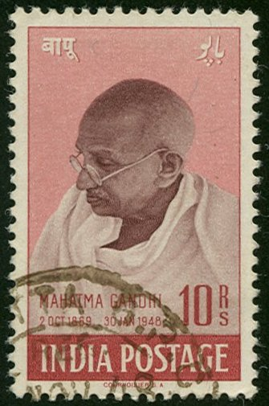
인도 10루피 지폐 · 간디의 얼굴이 새겨진 모든 인도 화폐 [Wikimedia · Govt of India]